Two. Sorting
Sorting is the process of rearranging a sequence of objects so as to put them in some logical order. For example, your credit card bill presents transactions in order by date—they were likely put into that order by a sorting algorithm. In the early days of computing, the common wisdom was that up to 30 percent of all computing cycles was spent sorting. If that fraction is lower today, one likely reason is that sorting algorithms are relatively efficient, not that sorting has diminished in relative importance. Indeed, the ubiquity of computer usage has put us awash in data, and the first step to organizing data is often to sort it. All computer systems have implementations of sorting algorithms, for use by the system and by users.
There are three practical reasons for you to study sorting algorithms, even though you might just use a system sort:
• Analyzing sorting algorithms is a thorough introduction to the approach that we use to compare algorithm performance throughout the book.
• Similar techniques are effective in addressing other problems.
• We often use sorting algorithms as a starting point to solve other problems.
More important than these practical reasons is that the algorithms are elegant, classic, and effective.
Sorting plays a major role in commercial data processing and in modern scientific computing. Applications abound in transaction processing, combinatorial optimization, astrophysics, molecular dynamics, linguistics, genomics, weather prediction, and many other fields. Indeed, a sorting algorithm (quicksort, in SECTION 2.3) was named as one of the top ten algorithms for science and engineering of the 20th century.
In this chapter, we consider several classical sorting methods and an efficient implementation of a fundamental data type known as the priority queue. We discuss the theoretical basis for comparing sorting algorithms and conclude the chapter with a survey of applications of sorting and priority queues.
2.1 Elementary Sorts
FOR OUR FIRST EXCURSION into the area of sorting algorithms, we shall study two elementary sorting methods and a variation of one of them. Among the reasons for studying these relatively simple algorithms in detail are the following: First, they provide context in which we can learn terminology and basic mechanisms. Second, these simple algorithms are more effective in some applications than the sophisticated algorithms that we shall discuss later. Third, they are useful in improving the efficiency of more sophisticated algorithms, as we will see.
Rules of the game
Our primary concern is algorithms for rearranging arrays of items where each item contains a key. The objective of the sorting algorithm is to rearrange the items such that their keys are ordered according to some well-defined ordering rule (usually numerical or alphabetical order). We want to rearrange the array so that each entry’s key is no smaller than the key in each entry with a lower index and no larger than the key in each entry with a larger index. Specific characteristics of the keys and the items can vary widely across applications. In Java, items are just objects, and the abstract notion of a key is captured in a built-in mechanism—the Comparable interface—that is described on page 247.
The class Example on the facing page illustrates the conventions that we shall use: we put our sort code in a sort() method within a single class along with private helper functions less() and exch() (and perhaps some others) and a sample client main(). Example also illustrates code that might be useful for initial debugging: its test client main() sorts strings from standard input using the private method show() to print the contents of the array. Later in this chapter, we will examine various test clients for comparing algorithms and for studying their performance. To differentiate sorting methods, we give our various sort classes different names. Clients can call different implementations by name: Insertion.sort(), Merge.sort(), Quick.sort(), and so forth.
With but a few exceptions, our sort code refers to the data only through two operations: the method less() that compares items and the method exch() that exchanges them. The exch() method is easy to implement, and the Comparable interface makes it easy to implement less(). Restricting data access to these two operations makes our code readable and portable, and makes it easier for us certify that algorithms are correct, to study performance and to compare algorithms. Before proceeding to consider sort implementations, we discuss a number of important issues that need to be carefully considered for every sort.
Certification
Does the sort implementation always put the array in order, no matter what the initial order? As a conservative practice, we include the statement assert isSorted(a); in our test client to certify that array entries are in order after the sort. It is reasonable to include this statement in every sort implementation, even though we normally test our code and develop mathematical arguments that our algorithms are correct. Note that this test is sufficient only if we use exch() exclusively to change array entries. When we use code that stores values into the array directly, we do not have full assurance (for example, code that destroys the original input array by setting all values to be the same would pass this test).
Running time
We also test algorithm performance. We start by proving facts about the number of basic operations (compares and exchanges, or perhaps the number of times the array is accessed, for read or write) that the various sorting algorithms perform for various natural input models. Then we use these facts to develop hypotheses about the comparative performance of the algorithms and present tools that you can use to experimentally check the validity of such hypotheses. We use a consistent coding style to facilitate the development of valid hypotheses about performance that will hold true for typical implementations.
Extra memory
The amount of extra memory used by a sorting algorithm is often as important a factor as running time. The sorting algorithms divide into two basic types: those that sort in place and use no extra memory except perhaps for a small function-call stack or a constant number of instance variables, and those that need enough extra memory to hold another copy of the array to be sorted.
Types of data
Our sort code is effective for any item type that implements the Comparable interface. Adhering to Java’s convention in this way is convenient because many of the types of data that you might want to sort implement Comparable. For example, Java’s numeric wrapper types such as Integer and Double implement Comparable, as do String and various advanced types such as File or URL. Thus, you can just call one of our sort methods with an array of any of these types as argument. For example, the code at right uses quicksort (see SECTION 2.3) to sort N random Double values. When we create types of our own, we can enable client code to sort that type of data by implementing the Comparable interface. To do so, we just need to implement a compareTo() method that defines an ordering on objects of that type known as the natural order for that type, as shown here for our Date data type (see page 91). Java’s convention is that the call v.compareTo(w) returns an integer that is negative, zero, or positive (usually -1, 0, or +1) when v < w, v = w, or v > w, respectively. For economy, we use standard notation like v>w as shorthand for code like v.compareTo(w)>0 for the remainder of this paragraph. By convention, v.compareTo(w) throws an exception if v and w are incompatible types or either is null. Furthermore, compareTo() must implement a total order: it must be
• Reflexive (for all v, v = v)
• Antisymmetric (for all v and w, if v < w then w > v and if v = w then w = v)
• Transitive (for all v, w, and x, if v <= w and w <= x then v <=x)
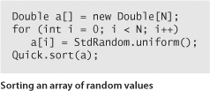
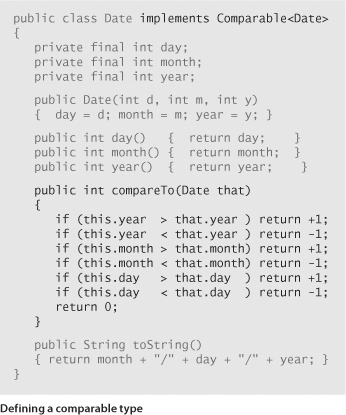
These rules are intuitive and standard in mathematics—you will have little difficulty adhering to them. In short, compareTo() implements our key abstraction—it defines the ordering of the items (objects) to be sorted, which can be any type of data that implements Comparable. Note that compareTo() need not use all of the instance variables. Indeed, the key might be a small part of each item.
FOR THE REMAINDER OF THIS CHAPTER, we shall address numerous algorithms for sorting arrays of objects having a natural order. To compare and contrast the algorithms, we shall examine a number of their properties, including the number of compares and exchanges that they use for various types of inputs and the amount of extra memory that they use. These properties lead to the development of hypotheses about performance properties, many of which have been validated on countless computers over the past several decades. Specific implementations always need to be checked, so we also consider tools for doing so. After considering the classic selection sort, insertion sort, shellsort, mergesort, quicksort, and heapsort algorithms, we will consider practical issues and applications, in SECTION 2.5.
Selection sort
One of the simplest sorting algorithms works as follows: First, find the smallest item in the array and exchange it with the first entry (itself if the first entry is already the smallest). Then, find the next smallest item and exchange it with the second entry. Continue in this way until the entire array is sorted. This method is called selection sort because it works by repeatedly selecting the smallest remaining item.
As you can see from the implementation in ALGORITHM 2.1, the inner loop of selection sort is just a compare to test a current item against the smallest item found so far (plus the code necessary to increment the current index and to check that it does not exceed the array bounds); it could hardly be simpler. The work of moving the items around falls outside the inner loop: each exchange puts an item into its final position, so the number of exchanges is N. Thus, the running time is dominated by the number of compares.
IN SUMMARY, selection sort is a simple sorting method that is easy to understand and to implement and is characterized by the following two signature properties:
Running time is insensitive to input
The process of finding the smallest item on one pass through the array does not give much information about where the smallest item might be on the next pass. This property can be disadvantageous in some situations. For example, the person using the sort client might be surprised to realize that it takes about as long to run selection sort for an array that is already in order or for an array with all keys equal as it does for a randomly-ordered array! As we shall see, other algorithms are better able to take advantage of initial order in the input.
Data movement is minimal
Each of the N exchanges changes the value of two array entries, so selection sort uses N exchanges—the number of array accesses is a linear function of the array size. None of the other sorting algorithms that we consider have this property (most involve linearithmic or quadratic growth).
Insertion sort
The algorithm that people often use to sort bridge hands is to consider the cards one at a time, inserting each into its proper place among those already considered (keeping them sorted). In a computer implementation, we need to make space to insert the current item by moving larger items one position to the right, before inserting the current item into the vacated position. ALGORITHM 2.2 is an implementation of this method, which is called insertion sort.
As in selection sort, the items to the left of the current index are in sorted order during the sort, but they are not in their final position, as they may have to be moved to make room for smaller items encountered later. The array is, however, fully sorted when the index reaches the right end.
Unlike that of selection sort, the running time of insertion sort depends on the initial order of the items in the input. For example, if the array is large and its entries are already in order (or nearly in order), then insertion sort is much, much faster than if the entries are randomly ordered or in reverse order.
Insertion sort works well for certain types of nonrandom arrays that often arise in practice, even if they are huge. For example, as just mentioned, consider what happens when you use insertion sort on an array that is already sorted. Each item is immediately determined to be in its proper place in the array, and the total running time is linear. (The running time of selection sort is quadratic for such an array.) The same is true for arrays whose keys are all equal (hence the condition in PROPOSITION B that the keys must be distinct).
More generally, we consider the concept of a partially sorted array, as follows: An inversion is a pair of entries that are out of order in the array. For instance, E X A M P L E has 11 inversions: E-A, X-A, X-M, X-P, X-L, X-E, M-L, M-E, P-L, P-E, and L-E. If the number of inversions in an array is less than a constant multiple of the array size, we say that the array is partially sorted. Typical examples of partially sorted arrays are the following:
• An array where each entry is not far from its final position
• A small array appended to a large sorted array
• An array with only a few entries that are not in place
Insertion sort is an efficient method for such arrays; selection sort is not. Indeed, when the number of inversions is low, insertion sort is likely to be faster than any sorting method that we consider in this chapter.
It is not difficult to speed up insertion sort substantially, by shortening its inner loop to move the larger entries to the right one position rather than doing full exchanges (thus cutting the number of array accesses in half). We leave this improvement for an exercise (see EXERCISE 2.1.25).
IN SUMMARY, insertion sort is an excellent method for partially sorted arrays and is also a fine method for tiny arrays. These facts are important not just because such arrays frequently arise in practice, but also because both types of arrays arise in intermediate stages of advanced sorting algorithms, so we will be considering insertion sort again in relation to such algorithms.
Visualizing sorting algorithms
Throughout this chapter, we will be using a simple visual representation to help describe the properties of sorting algorithms. Rather than tracing the progress of a sort with key values such as letters, numbers, or words, we use vertical bars, to be sorted by their heights. The advantage of such a representation is that it can give insights into the behavior of a sorting method.
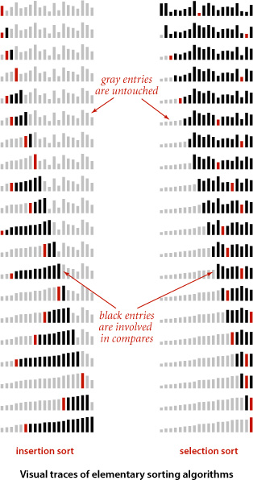
For example, you can see at a glance on the visual traces at right that insertion sort does not touch entries to the right of the scan pointer and selection sort does not touch entries to the left of the scan pointer. Moreover, it is clear from the visual traces that, since insertion sort also does not touch entries smaller than the inserted item, it uses about half the number of compares as selection sort, on the average.
With our StdDraw library, developing a visual trace is not much more difficult than doing a standard trace. We sort Double values, instrument the algorithm to call show() as appropriate (just as we do for a standard trace), and develop a version of show() that uses StdDraw to draw the bars instead of printing the results. The most complicated task is setting the scale for the y-axis so that the lines of the trace appear in the expected order. You are encouraged to work EXERCISE 2.1.18 in order to gain a better appreciation of the value of visual traces and the ease of creating them.
An even simpler task is to animate the trace so that you can see the array dynamically evolve to the sorted result. Developing an animated trace involves essentially the same process described in the previous paragraph, but without having to worry about the y-axis (just clear the window and redraw the bars each time). Though we cannot make the case on the printed page, such animated representations are also effective in gaining insight into how an algorithm works. You are also encouraged to work EXERCISE 2.1.17 to see for yourself.
Comparing two sorting algorithms
Now that we have two implementations, we are naturally interested in knowing which one is faster: selection sort (ALGORITHM 2.1) or insertion sort (ALGORITHM 2.2). Questions like this arise again and again and again in the study of algorithms and are a major focus throughout this book. We have discussed some fundamental ideas in CHAPTER 1, but we use this first case in point to illustrate our basic approach to answering such questions. Generally, following the approach introduced in SECTION 1.4, we compare algorithms by
• Implementing and debugging them
• Analyzing their basic properties
• Formulating a hypothesis about comparative performance
• Running experiments to validate the hypothesis
These steps are nothing more than the time-honored scientific method, applied to the study of algorithms.
In the present context, ALGORITHM 2.1 and ALGORITHM 2.2 are evidence of the first step; PROPOSITIONS A, B, and C constitute the second step; PROPERTY D on page 255 constitutes the third step; and the class SortCompare on page 256 enables the fourth step. These activities are all interrelated.
Our brief descriptions mask a substantial amount of effort that is required to properly implement, analyze, and test algorithms. Every programmer knows that such code is the product of a long round of debugging and refinement, every mathematician knows that proper analysis can be very difficult, and every scientist knows that formulating hypotheses and designing and executing experiments to validate them require great care. Full development of such results is reserved for experts studying our most important algorithms, but every programmer using an algorithm should be aware of the scientific context underlying its performance properties.
Having developed implementations, our next choice is to settle on an appropriate model for the input. For sorting, a natural model, which we have used for PROPOSITIONS A, B, and C, is to assume that the arrays are randomly ordered and that the key values are distinct. In applications where significant numbers of equal key values are present we will need a more complicated model.
How do we formulate a hypothesis about the running times of insertion sort and selection sort for randomly ordered arrays? Examining ALGORITHMS 2.1 and 2.2 and PROPOSITIONS A and B, it follows immediately that the running time of both algorithms should be quadratic for randomly ordered arrays. That is, the running time of insertion sort for such an input is proportional to some small constant times N2 and the running time of selection sort is proportional to some other small constant times N2. The values of the two constants depend on the cost of compares and exchanges on the particular computer being used. For many types of data and for typical computers, it is reasonable to assume that these costs are similar (though we will see a few significant exceptions). The following hypothesis follows directly:
To validate this hypothesis, we use SortCompare (see page 256) to perform the experiments. As usual, we use Stopwatch to compute the running time. The implementation of time() shown here does the job for the basic sorts in this chapter. The “randomly ordered” input model is embedded in the timeRandomInput() method in SortCompare, which generates random Double values, sorts them, and returns the total measured time of the sort for the given number of trials. Using random Double values between 0.0 and 1.0 is much simpler than the alternative of using a library function such as StdRandom.shuffle() and is effective because equal key values are very unlikely (see EXERCISE 2.5.31). As discussed in CHAPTER 1, the number of trials is taken as an argument both to take advantage of the law of large numbers (the more trials, the total running time divided by the number of trials is a more accurate estimate of the true average running time) and to help damp out system effects. You are encouraged to experiment with SortCompare on your computer to learn the extent to which its conclusion about insertion sort and selection sort is robust.
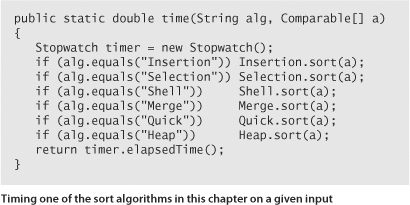
PROPERTY D is intentionally a bit vague—the value of the small constant factor is left unstated and the assumption that the costs of compares and exchanges are similar is left unstated—so that it can apply in a broad variety of situations. When possible, we try to capture essential aspects of the performance of each of the algorithms that we study in statements like this. As discussed in CHAPTER 1, each Property that we consider needs to be tested scientifically in a given situation, perhaps supplemented with a more refined hypothesis based upon a related Proposition (mathematical truth).
For practical applications, there is one further step, which is crucial: run experiments to validate the hypothesis on the data at hand. We defer consideration of this step to SECTION 2.5 and the exercises. In this case, if your sort keys are not distinct and/or not randomly ordered, PROPERTY D might not hold. You can randomly order an array with StdRandom.shuffle(), but applications with significant numbers of equal keys involve more careful analysis.
Our discussions of the analyses of algorithms are intended to be starting points, not final conclusions. If some other question about performance of the algorithms comes to mind, you can study it with a tool like SortCompare. Many opportunities to do so are presented in the exercises.
WE DO NOT DWELL further on the comparative performance of insertion sort and selection sort because we are much more interested in algorithms that can run a hundred or a thousand or a million times faster than either. Still, understanding these elementary algorithms is worthwhile for several reasons:
• They help us work out the ground rules.
• They provide performance benchmarks.
• They often are the method of choice in some specialized situations.
• They can serve as the basis for developing better algorithms.
For these reasons, we will use the same basic approach and consider elementary algorithms for every problem that we study throughout this book, not just sorting. Programs like SortCompare play a critical role in this incremental approach to algorithm development. At every step along the way, we can use such a program to help evaluate whether a new algorithm or an improved version of a known algorithm provides the performance gains that we expect.
Shellsort
To exhibit the value of knowing properties of elementary sorts, we next consider a fast algorithm based on insertion sort. Insertion sort is slow for large unordered arrays because the only exchanges it does involve adjacent entries, so items can move through the array only one place at a time. For example, if the item with the smallest key happens to be at the end of the array, N−1 exchanges are needed to get that one item where it belongs. Shellsort is a simple extension of insertion sort that gains speed by allowing exchanges of array entries that are far apart, to produce partially sorted arrays that can be efficiently sorted, eventually by insertion sort.
The idea is to rearrange the array to give it the property that taking every hth entry (starting anywhere) yields a sorted subsequence. Such an array is said to be h-sorted. Put another way, an h-sorted array is h independent sorted subsequences, interleaved together. By h-sorting for some large values of h, we can move items in the array long distances and thus make it easier to h-sort for smaller values of h. Using such a procedure for any sequence of values of h that ends in 1 will produce a sorted array: that is shellsort. The implementation in ALGORITHM 2.3 on the facing page uses the sequence of decreasing values ½(3k−1), starting at the largest increment less than N/3 and decreasing to 1. We refer to such a sequence as an increment sequence. ALGORITHM 2.3 computes its increment sequence; another alternative is to store an increment sequence in an array.
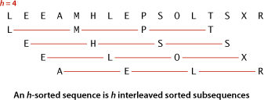
One way to implement shellsort would be, for each h, to use insertion sort independently on each of the h subsequences. Because the subsequences are independent, we can use an even simpler approach: when h-sorting the array, we insert each item among the previous items in its h-subsequence by exchanging it with those that have larger keys (moving them each one position to the right in the subsequence). We accomplish this task by using the insertion-sort code, but modified to decrement by h instead of 1 when moving through the array. This observation reduces the shellsort implementation to an insertion-sort-like pass through the array for each increment.
Shellsort gains efficiency by making a tradeoff between size and partial order in the subsequences. At the beginning, the subsequences are short; later in the sort, the subsequences are partially sorted. In both cases, insertion sort is the method of choice. The extent to which the subsequences are partially sorted is a variable factor that depends strongly on the increment sequence. Understanding shellsort’s performance is a challenge. Indeed, ALGORITHM 2.3 is the only sorting method we consider whose performance on randomly ordered arrays has not been precisely characterized.
How do we decide what increment sequence to use? In general, this question is a difficult one to answer. The performance of the algorithm depends not just on the number of increments, but also on arithmetical interactions among the increments such as the size of their common divisors and other properties. Many different increment sequences have been studied in the literature, but no provably best sequence has been found. The increment sequence that is used in ALGORITHM 2.3 is easy to compute and use, and performs nearly as well as more sophisticated increment sequences that have been discovered that have provably better worst-case performance. Increment sequences that are substantially better still may be waiting to be discovered.
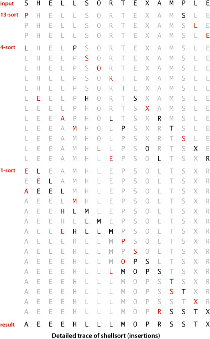
Shellsort is useful even for large arrays, particularly by contrast with selection sort and insertion sort. It also performs well on arrays that are in arbitrary order (not necessarily random). Indeed, constructing an array for which shellsort runs slowly for a particular increment sequence is usually a challenging exercise.
As you can learn with SortCompare, shellsort is much faster than insertion sort and selection sort, and its speed advantage increases with the array size. Before reading further, try using SortCompare to compare shellsort with insertion sort and selection sort for array sizes that are increasing powers of 2 on your computer (see EXERCISE 2.1.27). You will see that shellsort makes it possible to address sorting problems that could not be addressed with the more elementary algorithms. This example is our first practical illustration of an important principle that pervades this book: achieving speedups that enable the solution of problems that could not otherwise be solved is one of the prime reasons to study algorithm performance and design.
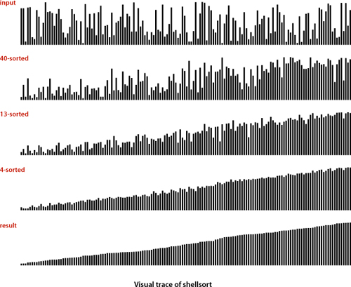
The study of the performance characteristics of shellsort requires mathematical arguments that are beyond the scope of this book. If you want to be convinced, start by thinking about how you would prove the following fact: when an h-sorted array is k-sorted, it remains h-sorted. As for the performance of ALGORITHM 2.3, the most important result in the present context is the knowledge that the running time of shellsort is not necessarily quadratic—for example, it is known that the worst-case number of compares for ALGORITHM 2.3 is proportional to N3/2. That such a simple modification can break the quadratic-running-time barrier is quite interesting, as doing so is a prime goal for many algorithm design problems.
No mathematical results are available about the average-case number of compares for shellsort for randomly ordered input. Increment sequences have been devised that drive the asymptotic growth of the worst-case number of compares down to N4/3, N5/4, N6/5, . . ., but many of these results are primarily of academic interest because these functions are hard to distinguish from one another (and from a constant factor of N) for practical values of N.
In practice, you can safely take advantage of the past scientific study of shellsort just by using the increment sequence in ALGORITHM 2.3 (or one of the increment sequences in the exercises at the end of this section, which may improve performance by 20 to 40 percent). Moreover, you can easily validate the following hypothesis:
EXPERIENCED PROGRAMMERS sometimes choose shellsort because it has acceptable running time even for moderately large arrays; it requires a small amount of code; and it uses no extra space. In the next few sections, we shall see methods that are more efficient, but they are perhaps only twice as fast (if that much) except for very large N, and they are more complicated. If you need a solution to a sorting problem, and are working in a situation where a system sort may not be available (for example, code destined for hardware or an embedded system), you can safely use shellsort, then determine sometime later whether it will be worthwhile to replace it with a more sophisticated method.
Q&A
Q. Sorting seems like a toy problem. Aren’t many of the other things that we do with computers much more interesting?
A. Perhaps, but many of those interesting things are made possible by fast sorting algorithms. You will find many examples in SECTION 2.5 and throughout the rest of the book. Sorting is worth studying now because the problem is easy to understand, and you can appreciate the ingenuity behind the faster algorithms.
Q. Why so many sorting algorithms?
A. One reason is that the performance of many algorithms depends on the input values, so different algorithms might be appropriate for different applications having different kinds of input. For example, insertion sort is the method of choice for partially sorted or tiny arrays. Other constraints, such as space and treatment of equal keys, also come into play. We will revisit this question in SECTION 2.5.
Q. Why bother using the tiny helper methods less() and exch()?
A. They are basic abstract operations needed by any sort algorithm, and the code is easier to understand in terms of these abstractions. Moreover, they make the code directly portable to other settings. For example, much of the code in ALGORITHMS 2.1 and 2.2 is legal code in several other programming languages. Even in Java, we can use this code as the basis for sorting primitive types (which are not Comparable): simply implement less() with the code v < w.
Q. When I run SortCompare, I get different values each time that I run it (and those are different from the values in the book). Why?
A. For starters, you have a different computer from the one we used, not to mention a different operating system, Java runtime, and so forth. All of these differences might lead to slight differences in the machine code for the algorithms. Differences each time that you run it on your computer might be due to other applications that you are running or various other conditions. Running a very large number of trials should dampen the effect. The lesson is that small differences in algorithm performance are difficult to notice nowadays. That is a primary reason that we focus on large ones!
Exercises
2.1.1 Show, in the style of the example trace with ALGORITHM 2.1, how selection sort sorts the array E A S Y Q U E S T I O N.
2.1.2 What is the maximum number of exchanges involving any particular item during selection sort? What is the average number of exchanges involving an item?
2.1.3 Give an example of an array of N items that maximizes the number of times the test a[j] < a[min] succeeds (and, therefore, min gets updated) during the operation of selection sort (ALGORITHM 2.1).
2.1.4 Show, in the style of the example trace with ALGORITHM 2.2, how insertion sort sorts the array E A S Y Q U E S T I O N.
2.1.5 For each of the two conditions in the inner for loop in insertion sort (ALGORITHM 2.2), describe an array of N items where that condition is always false when the loop terminates.
2.1.6 Which method runs faster for an array with all keys identical, selection sort or insertion sort?
2.1.7 Which method runs faster for an array in reverse order, selection sort or insertion sort?
2.1.8 Suppose that we use insertion sort on a randomly ordered array where items have only one of three values. Is the running time linear, quadratic, or something in between?
2.1.9 Show, in the style of the example trace with ALGORITHM 2.3, how shellsort sorts the array E A S Y S H E L L S O R T Q U E S T I O N.
2.1.10 Why not use selection sort for h-sorting in shellsort?
2.1.11 Implement a version of shellsort that keeps the increment sequence in an array, rather than computing it.
2.1.12 Instrument shellsort to print the number of compares divided by the array size for each increment. Write a test client that tests the hypothesis that this number is a small constant, by sorting arrays of random Double values, using array sizes that are increasing powers of 10, starting at 100.
Creative Problems
2.1.13 Deck sort. Explain how you would put a deck of cards in order by suit (in the order spades, hearts, clubs, diamonds) and by rank within each suit, with the restriction that the cards must be laid out face down in a row, and the only allowed operations are to check the values of two cards and to exchange two cards (keeping them face down).
2.1.14 Dequeue sort. Explain how you would sort a deck of cards, with the restriction that the only allowed operations are to look at the values of the top two cards, to exchange the top two cards, and to move the top card to the bottom of the deck.
2.1.15 Expensive exchange. A clerk at a shipping company is charged with the task of rearranging a number of large crates in order of the time they are to be shipped out. Thus, the cost of compares is very low (just look at the labels) relative to the cost of exchanges (move the crates). The warehouse is nearly full—there is extra space sufficient to hold any one of the crates, but not two. What sorting method should the clerk use?
2.1.16 Certification. Write a check() method that calls sort() for a given array and returns true if sort() puts the array in order and leaves the same set of objects in the array as were there initially, false otherwise. Do not assume that sort() is restricted to move data only with exch(). You may use Arrays.sort() and assume that it is correct.
2.1.17 Animation. Add code to Insertion and Selection to make them draw the array contents as vertical bars like the visual traces in this section, redrawing the bars after each pass, to produce an animated effect, ending in a “sorted” picture where the bars appear in order of their height. Hint: Use a client like the one in the text that generates random Double values, insert calls to show() as appropriate in the sort code, and implement a show() method that clears the canvas and draws the bars.
2.1.18 Visual trace. Modify your solution to the previous exercise to make Insertion and Selection produce visual traces such as those depicted in this section. Hint: Judicious use of setYscale() makes this problem easy. Extra credit: Add the code necessary to produce red and gray color accents such as those in our figures.
2.1.19 Shellsort worst case. Construct an array of 100 elements containing the numbers 1 through 100 for which shellsort, with the increments 1 4 13 40, uses as large a number of compares as you can find.
2.1.20 Shellsort best case. What is the best case for shellsort? Justify your answer.
2.1.21 Comparable transactions. Using our code for Date (page 247) as a model, expand your implementation of Transaction (EXERCISE 1.2.13) so that it implements Comparable, such that transactions are kept in order by amount.
Solution:
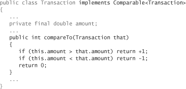
2.1.22 Transaction sort test client. Write a class SortTransactions that consists of a static method main() that reads a sequence of transactions from standard input, sorts them, and prints the result on standard output (see EXERCISE 1.3.17).
Solution:
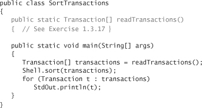
Experiments
2.1.23 Deck sort. Ask a few friends to sort a deck of cards (see EXERCISE 2.1.13). Observe them carefully and write down the method(s) that they use.
2.1.24 Insertion sort with sentinel. Develop an implementation of insertion sort that eliminates the j>0 test in the inner loop by first putting the smallest item into position. Use SortCompare to evaluate the effectiveness of doing so. Note: It is often possible to avoid an index-out-of-bounds test in this way—the element that enables the test to be eliminated is known as a sentinel.
2.1.25 Insertion sort without exchanges. Develop an implementation of insertion sort that moves larger elements to the right one position with one array access per entry, rather than using exch(). Use SortCompare to evaluate the effectiveness of doing so.
2.1.26 Primitive types. Develop a version of insertion sort that sorts arrays of int values and compare its performance with the implementation given in the text (which sorts Integer values and implicitly uses autoboxing and auto-unboxing to convert).
2.1.27 Shellsort is subquadratic. Use SortCompare to compare shellsort with insertion sort and selection sort on your computer. Use array sizes that are increasing powers of 2, starting at 128.
2.1.28 Equal keys. Formulate and validate hypotheses about the running time of insertion sort and selection sort for arrays that contain just two key values, assuming that the values are equally likely to occur.
2.1.29 Shellsort increments. Run experiments to compare the increment sequence in ALGORITHM 2.3 with the sequence 1, 5, 19, 41, 109, 209, 505, 929, 2161, 3905, 8929, 16001, 36289, 64769, 146305, 260609 (which is formed by merging together the sequences 9·4k − 9·2k + 1 and 4k − 3·2k + 1). See EXERCISE 2.1.11.
2.1.30 Geometric increments. Run experiments to determine a value of t that leads to the lowest running time of shellsort for random arrays for the increment sequence 1, t, t2, t3, t4, . . . for N = 106. Give the values of t and the increment sequences for the best three values that you find.
The following exercises describe various clients for helping to evaluate sorting methods. They are intended as starting points for helping to understand performance properties, using random data. In all of them, use time(), as in SortCompare, so that you can get more accurate results by specifying more trials in the second command-line argument. We refer back to these exercises in later sections when evaluating more sophisticated methods.
2.1.31 Doubling test. Write a client that performs a doubling test for sort algorithms. Start at N equal to 1000, and print N, the predicted number of seconds, the actual number of seconds, and the ratio as N doubles. Use your program to validate that insertion sort and selection sort are quadratic for random inputs, and formulate and test a hypothesis for shellsort.
2.1.32 Plot running times. Write a client that uses StdDraw to plot the average running times of the algorithm for random inputs and various values of the array size. You may add one or two more command-line arguments. Strive to design a useful tool.
2.1.33 Distribution. Write a client that enters into an infinite loop running sort() on arrays of the size given as the third command-line argument, measures the time taken for each run, and uses StdDraw to plot the average running times. A picture of the distribution of the running times should emerge.
2.1.34 Corner cases. Write a client that runs sort() on difficult or pathological cases that might turn up in practical applications. Examples include arrays that are already in order, arrays in reverse order, arrays where all keys are the same, arrays consisting of only two distinct values, and arrays of size 0 or 1.
2.1.35 Nonuniform distributions. Write a client that generates test data by randomly ordering objects using other distributions than uniform, including the following:
• Gaussian
• Poisson
• Geometric
• Discrete (see EXERCISE 2.1.28 for a special case)
Develop and test hypotheses about the effect of such input on the performance of the algorithms in this section.
2.1.36 Nonuniform data. Write a client that generates test data that is not uniform, including the following:
• Half the data is 0s, half 1s.
• Half the data is 0s, half the remainder is 1s, half the remainder is 2s, and so forth.
• Half the data is 0s, half random int values.
Develop and test hypotheses about the effect of such input on the performance of the algorithms in this section.
2.1.37 Partially sorted. Write a client that generates partially sorted arrays, including the following:
• 95 percent sorted, last percent random values
• All entries within 10 positions of their final place in the array
• Sorted except for 5 percent of the entries randomly dispersed throughout the array
Develop and test hypotheses about the effect of such input on the performance of the algorithms in this section.
2.1.38 Various types of items. Write a client that generates arrays of items of various types with random key values, including the following:
• String key (at least ten characters), one double value
• double key, ten String values (all at least ten characters)
• int key, one int[20] value
Develop and test hypotheses about the effect of such input on the performance of the algorithms in this section.
2.2 Mergesort
THE ALGORITHMS that we consider in this section are based on a simple operation known as merging: combining two ordered arrays to make one larger ordered array. This operation immediately leads to a simple recursive sort method known as mergesort: to sort an array, divide it into two halves, sort the two halves (recursively), and then merge the results. As you will see, one of mergesort’s most attractive properties is that it guarantees to sort any array of N items in time proportional to N log N. Its prime disadvantage is that it uses extra space proportional to N.
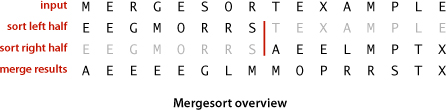
Abstract in-place merge
The straightforward approach to implementing merging is to design a method that merges two disjoint ordered arrays of Comparable objects into a third array. This strategy is easy to implement: create an output array of the requisite size and then choose successively the smallest remaining item from the two input arrays to be the next item added to the output array.
However, when we mergesort a large array, we are doing a huge number of merges, so the cost of creating a new array to hold the output every time that we do a merge is problematic. It would be much more desirable to have an in-place method so that we could sort the first half of the array in place, then sort the second half of the array in place, then do the merge of the two halves by moving the items around within the array, without using a significant amount of other extra space. It is worthwhile to pause momentarily to consider how you might do that. At first blush, this problem seems to be one that must be simple to solve, but solutions that are known are quite complicated, especially by comparison to alternatives that use extra space.
Still, the abstraction of an in-place merge is useful. Accordingly, we use the method signature merge(a, lo, mid, hi) to specify a merge method that puts the result of merging the subarrays a[lo..mid] with a[mid+1..hi] into a single ordered array, leaving the result in a[lo..hi]. The code on the next page implements this merge method in just a few lines by copying everything to an auxiliary array and then merging back to the original. Another approach is described in EXERCISE 2.2.10.
Top-down mergesort
ALGORITHM 2.4 is a recursive mergesort implementation based on this abstract in-place merge. It is one of the best-known examples of the utility of the divide-and-conquer paradigm for efficient algorithm design. This recursive code is the basis for an inductive proof that the algorithm sorts the array: if it sorts the two subarrays, it sorts the whole array, by merging together the subarrays.
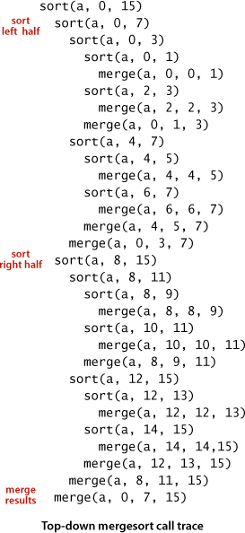
To understand mergesort, it is worthwhile to consider carefully the dynamics of the method calls, shown in the trace at right. To sort a[0..15], the sort() method calls itself to sort a[0..7] then calls itself to sort a[0..3] and a[0..1] before finally doing the first merge of a[0] with a[1] after calling itself to sort a[0] and then a[1] (for brevity, we omit the calls for the base-case 1-entry sorts in the trace). Then the next merge is a[2] with a[3] and then a[0..1] with a[2..3] and so forth. From this trace, we see that the sort code simply provides an organized way to sequence the calls to the merge() method. This insight will be useful later in this section.
The recursive code also provides us with the basis for analyzing mergesort’s running time. Because mergesort is a prototype of the divide-and-conquer algorithm design paradigm, we will consider this analysis in detail.
Another way to understand PROPOSITION F is to examine the tree drawn below, where each node depicts a subarray for which sort() does a merge(). The tree has precisely n levels. For k from 0 to n − 1, the kth level from the top depicts 2k subarrays, each of length 2n−k, each of which thus requires at most 2n−k compares for the merge. Thus we have 2k · 2n−k = 2n total cost for each of the n levels, for a total of n 2n = N lgN.
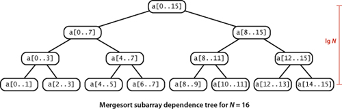
PROPOSITIONS F and G tell us that we can expect the time required by mergesort to be proportional to N log N. That fact brings us to a different level from the elementary methods in SECTION 2.1 because it tells us that we can sort huge arrays using just a logarithmic factor more time than it takes to examine every entry. You can sort millions of items (or more) with mergesort, but not with insertion sort or selection sort. The primary drawback of mergesort is that it requires extra space proportional to N, for the auxiliary array for merging. If space is at a premium, we need to consider another method. On the other hand, we can cut the running time of mergesort substantially with some carefully considered modifications to the implementation.
Use insertion sort for small subarrays
We can improve most recursive algorithms by handling small cases differently, because the recursion guarantees that the method will be used often for small cases, so improvements in handling them lead to improvements in the whole algorithm. In the case of sorting, we know that insertion sort (or selection sort) is simple and therefore likely to be faster than mergesort for tiny subarrays. As usual, a visual trace provides insight into the operation of mergesort. The visual trace on the facing page shows the operation of a mergesort implementation with a cutoff for small subarrays. Switching to insertion sort for small subarrays (length 15 or less, say) will improve the running time of a typical mergesort implementation by 10 to 15 percent (see EXERCISE 2.2.23).
Test whether the array is already in order
We can reduce the running time to be linear for arrays that are already in order by adding a test to skip the call to merge() if a[mid] is less than or equal to a[mid+1]. With this change, we still do all the recursive calls, but the running time for any sorted subarray is linear (see EXERCISE 2.2.8).
Eliminate the copy to the auxiliary array
It is possible to eliminate the time (but not the space) taken to copy to the auxiliary array used for merging. To do so, we use two invocations of the sort method: one takes its input from the given array and puts the sorted output in the auxiliary array; the other takes its input from the auxiliary array and puts the sorted output in the given array. With this approach, in a bit of recursive trickery, we can arrange the recursive calls such that the computation switches the roles of the input array and the auxiliary array at each level (see EXERCISE 2.2.11).
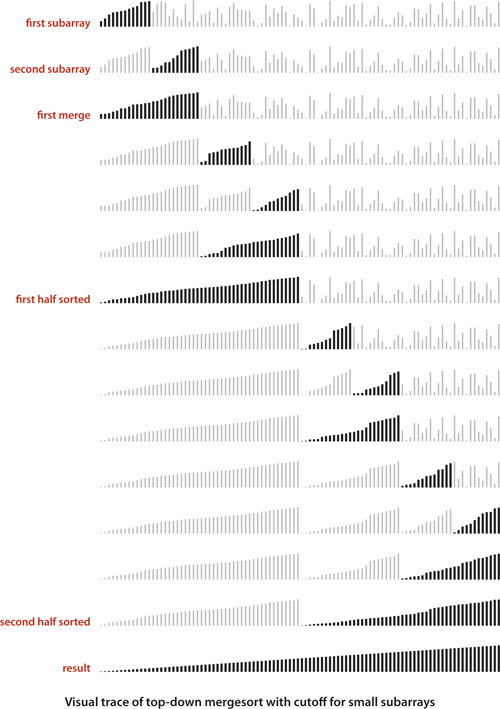
It is appropriate to repeat here a point raised in CHAPTER 1 that is easily forgotten and needs reemphasis. Locally, we treat each algorithm in this book as if it were critical in some application. Globally, we try to reach general conclusions about which approach to recommend. Our discussion of such improvements is not necessarily a recommendation to always implement them, rather a warning not to draw absolute conclusions about performance from initial implementations. When addressing a new problem, your best bet is to use the simplest implementation with which you are comfortable and then refine it if it becomes a bottleneck. Addressing improvements that decrease running time just by a constant factor may not otherwise be worthwhile. You need to test the effectiveness of specific improvements by running experiments, as we indicate in exercises throughout.
In the case of mergesort, the three improvements just listed are simple to implement and are of interest when mergesort is the method of choice—for example, in situations discussed at the end of this chapter.
Bottom-up mergesort
The recursive implementation of mergesort is prototypical of the divide-and-conquer algorithm design paradigm, where we solve a large problem by dividing it into pieces, solving the subproblems, then using the solutions for the pieces to solve the whole problem. Even though we are thinking in terms of merging together two large subarrays, the fact is that most merges are merging together tiny subarrays. Another way to implement mergesort is to organize the merges so that we do all the merges of tiny subarrays on one pass, then do a second pass to merge those subarrays in pairs, and so forth, continuing until we do a merge that encompasses the whole array. This method requires even less code than the standard recursive implementation. We start by doing a pass of 1-by-1 merges (considering individual items as subarrays of size 1), then a pass of 2-by-2 merges (merge subarrays of size 2 to make subarrays of size 4), then 4-by-4 merges, and so forth. The second subarray may be smaller than the first in the last merge on each pass (which is no problem for merge()), but otherwise all merges involve subarrays of equal size, doubling the sorted subarray size for the next pass.
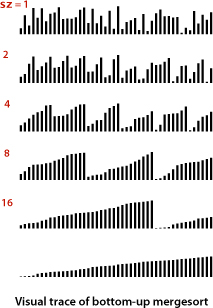
WHEN THE ARRAY LENGTH IS A POWER OF 2, top-down and bottom-up mergesort perform precisely the same compares and array accesses, just in a different order. When the array length is not a power of 2, the sequence of compares and array accesses for the two algorithms will be different (see EXERCISE 2.2.5).
A version of bottom-up mergesort is the method of choice for sorting data organized in a linked list. Consider the list to be sorted sublists of size 1, then pass through to make sorted subarrays of size 2 linked together, then size 4, and so forth. This method rearranges the links to sort the list in place (without creating any new list nodes).
Both the top-down and bottom-up approaches to implementing a divide-and-conquer algorithm are intuitive. The lesson that you can take from mergesort is this: Whenever you encounter an algorithm based on one of these approaches, it is worth considering the other. Do you want to solve the problem by breaking it up into smaller problems (and solving them recursively) as in Merge.sort() or by building small solutions into larger ones as in MergeBU.sort()?
The complexity of sorting
One important reason to know about mergesort is that we use it as the basis for proving a fundamental result in the field of computational complexity that helps us understand the intrinsic difficulty of sorting. In general, computational complexity plays an important role in the design of algorithms, and this result in particular is directly relevant to the design of sorting algorithms, so we next consider it in detail.
The first step in a study of complexity is to establish a model of computation. Generally, researchers strive to understand the simplest model relevant to a problem. For sorting, we study the class of compare-based algorithms that make their decisions about items only on the basis of comparing keys. A compare-based algorithm can do an arbitrary amount of computation between compares, but cannot get any information about a key except by comparing it with another one. Because of our restriction to the Comparable API, all of the algorithms in this chapter are in this class (note that we are ignoring the cost of array accesses), as are many algorithms that we might imagine. In CHAPTER 5, we consider algorithms that are not restricted to Comparable items.
This result serves as a guide for us to know, when designing a sorting algorithm, how well we can expect to do. For example, without such a result, one might set out to try to design a compare-based sorting algorithm that uses half as many compares as does mergesort, in the worst case. The lower bound in PROPOSITION I says that such an effort is futile—no such algorithm exists. It is an extremely strong statement that applies to any conceivable compare-based algorithm.
PROPOSITION H asserts that the number of compares used by mergesort in the worst case is ~ N lg N. This result is an upper bound on the difficulty of the sorting problem in the sense that a better algorithm would have to guarantee to use a smaller number of compares. PROPOSITION I asserts that no sorting algorithm can guarantee to use fewer than ~ N lg N compares. It is a lower bound on the difficulty of the sorting problem in the sense that even the best possible algorithm must use at least that many compares in the worst case. Together, they imply:
It is important to note that, like the model of computation, we need to precisely define what we mean by an optimal algorithm. For example, we might tighten the definition of optimality and insist that an optimal algorithm for sorting is one that uses precisely lg N! compares. We do not do so because we could not notice the difference between such an algorithm and (for example) mergesort for large N. Or, we might broaden the definition of optimality to include any sorting algorithm whose worst-case number of compares is within a constant factor of N lg N. We do not do so because we might very well notice the difference between such an algorithm and mergesort for large N.
COMPUTATIONAL COMPLEXITY MAY SEEM RATHER ABSTRACT, but fundamental research on the intrinsic difficulty of solving computational problems hardly needs justification. Moreover, when it does apply, it is emphatically the case that computational complexity affects the development of good software. First, good upper bounds allow software engineers to provide performance guarantees; there are many documented instances where poor performance has been traced to someone using a quadratic sort instead of a linearithmic one. Second, good lower bounds spare us the effort of searching for performance improvements that are not attainable.
But the optimality of mergesort is not the end of the story and should not be misused to indicate that we need not consider other methods for practical applications. That is not the case because the theory in this section has a number of limitations. For example:
• Mergesort is not optimal with respect to space usage.
• The worst case may not be likely in practice.
• Operations other than compares (such as array accesses) may be important.
• One can sort certain data without using any compares.
Thus, we shall be considering several other sorting methods in this book.
Q&A
Q. Is mergesort faster than shellsort?
A. In practice, their running times are within a small constant factor of one another (when shellsort is using a well-tested increment sequence like the one in ALGORITHM 2.3), so comparative performance depends on the implementations.
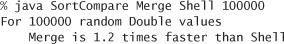
In theory, no one has been able to prove that shellsort is linearithmic for random data, so there remains the possibility that the asymptotic growth of the average-case performance of shellsort is higher. Such a gap has been proven for worst-case performance, but it is not relevant in practice.
Q. Why not make the aux[] array local to merge()?
A. To avoid the overhead of creating an array for every merge, even the tiny ones. This cost would dominate the running time of mergesort (see EXERCISE 2.2.26). A more proper solution (which we avoid in the text to reduce clutter in the code) is to make aux[] local to sort() and pass it as an argument to merge() (see EXERCISE 2.2.9).
Q. How does mergesort fare when there are duplicate values in the array?
A. If all the items have the same value, the running time is linear (with the extra test to skip the merge when the array is sorted), but if there is more than one duplicate value, this performance gain is not necessarily realized. For example, suppose that the input array consists of N items with one value in odd positions and N items with another value in even positions. The running time is linearithmic for such an array (it satisfies the same recurrence as for items with distinct values), not linear.
Exercises
2.2.1 Give a trace, in the style of the trace given at the beginning of this section, showing how the keys A E Q S U Y E I N O S T are merged with the abstract in-place merge() method.
2.2.2 Give traces, in the style of the trace given with ALGORITHM 2.4, showing how the keys E A S Y Q U E S T I O N are sorted with top-down mergesort.
2.2.3 Answer EXERCISE 2.2.2 for bottom-up mergesort.
2.2.4 Does the abstract in-place merge produce proper output if and only if the two input subarrays are in sorted order? Prove your answer, or provide a counterexample.
2.2.5 Give the sequence of subarray sizes in the merges performed by both the top-down and the bottom-up mergesort algorithms, for N = 39.
2.2.6 Write a program to compute the exact value of the number of array accesses used by top-down mergesort and by bottom-up mergesort. Use your program to plot the values for N from 1 to 512, and to compare the exact values with the upper bound 6N lg N.
2.2.7 Show that the number of compares used by mergesort is monotonically increasing (C(N+1) > C(N) for all N > 0).
2.2.8 Suppose that ALGORITHM 2.4 is modified to skip the call on merge() whenever a[mid] <= a[mid+1]. Prove that the number of compares used to mergesort a sorted array is linear.
2.2.9 Use of a static array like aux[] is inadvisable in library software because multiple clients might use the class concurrently. Give an implementation of Merge that does not use a static array. Do not make aux[] local to merge() (see the Q&A for this section). Hint: Pass the auxiliary array as an argument to the recursive sort().
Creative Problems
2.2.10 Faster merge. Implement a version of merge() that copies the second half of a[] to aux[] in decreasing order and then does the merge back to a[]. This change allows you to remove the code to test that each of the halves has been exhausted from the inner loop. Note: The resulting sort is not stable (see page 341).
2.2.11 Improvements. Implement the three improvements to mergesort that are described in the text on page 275: Add a cutoff for small subarrays, test whether the array is already in order, and avoid the copy by switching arguments in the recursive code.
2.2.12 Sublinear extra space. Develop a merge implementation that reduces the extra space requirement to max(M, N/M), based on the following idea: Divide the array into N/M blocks of size M (for simplicity in this description, assume that N is a multiple of M). Then, (i) considering the blocks as items with their first key as the sort key, sort them using selection sort; and (ii) run through the array merging the first block with the second, then the second block with the third, and so forth.
2.2.13 Lower bound for average case. Prove that the expected number of compares used by any compare-based sorting algorithm must be at least ~N lg N (assuming that all possible orderings of the input are equally likely). Hint: The expected number of compares is at least the external path length of the compare tree (the sum of the lengths of the paths from the root to all leaves), which is minimized when it is balanced.
2.2.14 Merging sorted queues. Develop a static method that takes two queues of sorted items as arguments and returns a queue that results from merging the queues into sorted order.
2.2.15 Bottom-up queue mergesort. Develop a bottom-up mergesort implementation based on the following approach: Given N items, create N queues, each containing one of the items. Create a queue of the N queues. Then repeatedly apply the merging operation of EXERCISE 2.2.14 to the first two queues and reinsert the merged queue at the end. Repeat until the queue of queues contains only one queue.
2.2.16 Natural mergesort. Write a version of bottom-up mergesort that takes advantage of order in the array by proceeding as follows each time it needs to find two arrays to merge: find a sorted subarray (by incrementing a pointer until finding an entry that is smaller than its predecessor in the array), then find the next, then merge them. Analyze the running time of this algorithm in terms of the array size and the number of maximal increasing sequences in the array.
2.2.17 Linked-list sort. Implement a natural mergesort for linked lists. (This is the method of choice for sorting linked lists because it uses no extra space and is guaranteed to be linearithmic.)
2.2.18 Shuffling a linked list. Develop and implement a divide-and-conquer algorithm that randomly shuffles a linked list in linearithmic time and logarithmic extra space.
2.2.19 Inversions. Develop and implement a linearithmic algorithm for computing the number of inversions in a given array (the number of exchanges that would be performed by insertion sort for that array—see SECTION 2.1). This quantity is related to the Kendall tau distance; see SECTION 2.5.
2.2.20 Index sort. Develop and implement a version of mergesort that does not rearrange the array, but returns an int[] array perm such that perm[i] is the index of the ith smallest entry in the array.
2.2.21 Triplicates. Given three lists of N names each, devise a linearithmic algorithm to determine if there is any name common to all three lists, and if so, return the first such name.
2.2.22 3-way mergesort. Suppose instead of dividing in half at each step, you divide into thirds, sort each third, and combine using a 3-way merge. What is the order of growth of the overall running time of this algorithm?
Experiments
2.2.23 Improvements. Run empirical studies to evaluate the effectiveness of each of the three improvements to mergesort that are described in the text (see EXERCISE 2.2.11). Also, compare the performance of the merge implementation given in the text with the merge described in EXERCISE 2.2.10. In particular, empirically determine the best value of the parameter that decides when to switch to insertion sort for small subarrays.
2.2.24 Sort-test improvement. Run empirical studies for large randomly ordered arrays to study the effectiveness of the modification described in EXERCISE 2.2.8 for random data. In particular, develop a hypothesis about the average number of times the test (whether an array is sorted) succeeds, as a function of N (the original array size for the sort).
2.2.25 Multiway mergesort. Develop a mergesort implementation based on the idea of doing k-way merges (rather than 2-way merges). Analyze your algorithm, develop a hypothesis regarding the best value of k, and run experiments to validate your hypothesis.
2.2.26 Array creation. Use SortCompare to get a rough idea of the effect on performance on your machine of creating aux[] in merge() rather than in sort().
2.2.27 Subarray lengths. Run mergesort for large random arrays, and make an empirical determination of the average length of the other subarray when the first subarray exhausts, as a function of N (the sum of the two subarray sizes for a given merge).
2.2.28 Top-down versus bottom-up. Use SortCompare to compare top-down and bottom-up mergesort for N=103, 104, 105, and 106.
2.2.29 Natural mergesort. Determine empirically the number of passes needed in a natural mergesort (see EXERCISE 2.2.16) for random Long keys with N=103, 106, and 109. Hint: You do not need to implement a sort (or even generate full 64-bit keys) to complete this exercise.
2.3 Quicksort
THE SUBJECT OF THIS SECTION is the sorting algorithm that is probably used more widely than any other, quicksort. Quicksort is popular because it is not difficult to implement, works well for a variety of different kinds of input data, and is substantially faster than any other sorting method in typical applications. The quicksort algorithm’s desirable features are that it is in-place (uses only a small auxiliary stack) and that it requires time proportional to N log N on the average to sort an array of length N. None of the algorithms that we have so far considered combine these two properties. Furthermore, quicksort has a shorter inner loop than most other sorting algorithms, which means that it is fast in practice as well as in theory. Its primary drawback is that it is fragile in the sense that some care is involved in the implementation to be sure to avoid bad performance. Numerous examples of mistakes leading to quadratic performance in practice are documented in the literature. Fortunately, the lessons learned from these mistakes have led to various improvements to the algorithm that make it of even broader utility, as we shall see.
The basic algorithm
Quicksort is a divide-and-conquer method for sorting. It works by partitioning an array into two subarrays, then sorting the subarrays independently. Quicksort is complementary to mergesort: for mergesort, we break the array into two subarrays to be sorted and then combine the ordered subarrays to make the whole ordered array; for quicksort, we rearrange the array such that, when the two subarrays are sorted, the whole array is ordered. In the first instance, we do the two recursive calls before working on the whole array; in the second instance, we do the two recursive calls after working on the whole array. For mergesort, the array is divided in half; for quicksort, the position of the partition depends on the contents of the array.
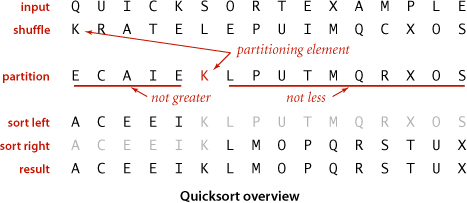
The crux of the method is the partitioning process, which rearranges the array to make the following three conditions hold:
• The entry a[j] is in its final place in the array, for some j.
• No entry in a[lo] through a[j-1] is greater than a[j].
• No entry in a[j+1] through a[hi] is less than a[j].
We achieve a complete sort by partitioning, then recursively applying the method.
Because the partitioning process always fixes one item into its position, a formal proof by induction that the recursive method constitutes a proper sort is not difficult to develop: if the left subarray and the right subarray are both properly sorted, then the result array, made up of the left subarray (in order, with no entry larger than the partitioning item), the partitioning item, and the right subarray (in order, with no entry smaller that the partitioning item), is in order. ALGORITHM 2.5 is a recursive program that implements this idea. It is a randomized algorithm, because it randomly shuffles the array before sorting it. Our reason for doing so is to be able to predict (and depend upon) its performance characteristics, as discussed below.
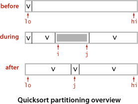
To complete the implementation, we need to implement the partitioning method. We use the following general strategy: First, we arbitrarily choose a[lo] to be the partitioning item—the one that will go into its final position. Next, we scan from the left end of the array until we find an entry greater than (or equal to) the partitioning item, and we scan from the right end of the array until we find an entry less than (or equal to) the partitioning item. The two items that stopped the scans are out of place in the final partitioned array, so we exchange them. Continuing in this way, we ensure that no array entries to the left of the left index i are greater than the partitioning item, and no array entries to the right of the right index j are less than the partitioning item. When the scan indices cross, all that we need to do to complete the partitioning process is to exchange the partitioning item a[lo] with the rightmost entry of the left subarray (a[j]) and return its index j.
There are several subtle issues with respect to implementing quicksort that are reflected in this code and worthy of mention, because each either can lead to incorrect code or can significantly impact performance. Next, we discuss several of these issues. Later in this section, we will consider three important higher-level algorithmic improvements.
Partitioning in place
If we use an extra array, partitioning is easy to implement, but not so much easier that it is worth the extra cost of copying the partitioned version back into the original. A novice Java programmer might even create a new spare array within the recursive method, for each partition, which would drastically slow down the sort.
Staying in bounds
If the smallest item or the largest item in the array is the partitioning item, we have to take care that the pointers do not run off the left or right ends of the array, respectively. Our partition() implementation has explicit tests to guard against this circumstance. The test (j == lo) is redundant, since the partitioning item is at a[lo] and not less than itself. With a similar technique on the right it is not difficult to eliminate both tests (see EXERCISE 2.3.17).
Preserving randomness
The random shuffle puts the array in random order. Since it treats all items in the subarrays uniformly, ALGORITHM 2.5 has the property that its two subarrays are also in random order. This fact is crucial to the predictability of the algorithm’s running time. An alternate way to preserve randomness is to choose a random item for partitioning within partition().
Terminating the loop
Experienced programmers know to take special care to ensure that any loop must always terminate, and the partitioning loop for quicksort is no exception. Properly testing whether the pointers have crossed is a bit trickier than it might seem at first glance. A common error is to fail to take into account that the array might contain other items with the same key value as the partitioning item.
Handling items with keys equal to the partitioning item’s key
It is best to stop the left scan for items with keys greater than or equal to the partitioning item’s key and the right scan for items with key less than or equal to the partitioning item’s key, as in ALGORITHM 2.5. Even though this policy might seem to create unnecessary exchanges involving items with keys equal to the partitioning item’s key, it is crucial to avoiding quadratic running time in certain typical applications (see EXERCISE 2.3.11). Later, we discuss a better strategy for the case when the array contains a large number of items with equal keys.
Terminating the recursion
Experienced programmers also know to take special care to ensure that any recursive method must always terminate, and quicksort is again no exception. For instance, a common mistake in implementing quicksort involves not ensuring that one item is always put into position, then falling into an infinite recursive loop when the partitioning item happens to be the largest or smallest item in the array.
Performance characteristics
Quicksort has been subjected to very thorough mathematical analysis, so that we can make precise statements about its performance. The analysis has been validated through extensive empirical experience, and is a useful tool in tuning the algorithm for optimum performance.
The inner loop of quicksort (in the partitioning method) increments an index and compares an array entry against a fixed value. This simplicity is one factor that makes quicksort quick: it is hard to envision a shorter inner loop in a sorting algorithm. For example, mergesort and shellshort are typically slower than quicksort because they also do data movement within their inner loops.
The second factor that makes quicksort quick is that it uses few compares. Ultimately, the efficiency of the sort depends on how well the partitioning divides the array, which in turn depends on the value of the partitioning item’s key. Partitioning divides a large randomly ordered array into two smaller randomly ordered subarrays, but the actual split is equally likely (for distinct keys) to be anywhere in the array. Next, we consider the analysis of the algorithm, which allows us to see how this choice compares to the ideal choice.
The best case for quicksort is when each partitioning stage divides the array exactly in half. This circumstance would make the number of compares used by quicksort satisfy the divide-and-conquer recurrence CN = 2CN/2 + N. The 2CN/2 term covers the cost of sorting the two subarrays; the N is the cost of examining each entry, using one partitioning index or the other. As in the proof of PROPOSITION F for mergesort, we know that this recurrence has the solution CN ~ N lg N. Although things do not always go this well, it is true that the partition falls in the middle on the average. Taking into account the precise probability of each partition position makes the recurrence more complicated and more difficult to solve, but the final result is similar. The proof of this result is the basis for our confidence in quicksort. If you are not mathematically inclined, you may wish to skip (and trust) it; if you are mathematically inclined, you may find it intriguing.
When keys may not be distinct, as is typical in practical applications, precise anaysis is considerably more complicated, but it is not difficult to show that the average number of compares is no greater than than CN, even when duplicate keys may be present (on page 296, we will look at a way to improve quicksort in this case).
Despite its many assets, the basic quicksort program has one potential liability: it can be extremely inefficient if the partitions are unbalanced. For example, it could be the case that the first partition is on the smallest item, the second partition on the next smallest item, and so forth, so that the program will remove just one item for each call, leading to an excessive number of partitions of large subarrays. Avoiding this situation is the primary reason that we randomly shuffle the array before using quicksort. This action makes it so unlikely that bad partitions will happen consistently that we need not worry about the possibility.
IN SUMMARY, you can be sure that the running time of ALGORITHM 2.5 will be within a constant factor of 1.39N lg N whenever it is used to sort N items. The same is true of mergesort, but quicksort is typically faster because (even though it does 39 percent more compares) it does much less data movement. This mathematical assurance is probabilistic, but you can certainly rely upon it.
Algorithmic improvements
Quicksort was invented in 1960 by C. A. R. Hoare, and many people have studied and refined it since that time. It is tempting to try to develop ways to improve quicksort: a faster sorting algorithm is computer science’s “better mousetrap,” and quicksort is a venerable method that seems to invite tinkering. Almost from the moment Hoare first published the algorithm, people began proposing ways to improve the algorithm. Not all of these ideas are fully successful, because the algorithm is so well-balanced that the effects of improvements can be more than offset by unexpected side effects, but a few of them, which we now consider, are quite effective.
If your sort code is to be used a great many times or to sort a huge array (or, in particular, if it is to be used as a library sort that will be used to sort arrays of unknown characteristics), then it is worthwhile to consider the improvements that are discussed in the next few paragraphs. As noted, you need to run experiments to determine the effectiveness of these improvements and to determine the best choice of parameters for your implementation. Typically, improvements of 20 to 30 percent are available.
Cutoff to insertion sort
As with most recursive algorithms, an easy way to improve the performance of quicksort is based on the following two observations:
• Quicksort is slower than insertion sort for tiny subarrays.
• Being recursive, quicksort’s sort() is certain to call itself for tiny subarrays.
Accordingly, it pays to switch to insertion sort for tiny subarrays. A simple change to ALGORITHM 2.5 accomplishes this improvement: replace the statement
if (hi <= lo) return;
in sort() with a statement that invokes insertion sort for small subarrays:
if (hi <= lo + M) { Insertion.sort(a, lo, hi); return; }
The optimum value of the cutoff M is system-dependent, but any value between 5 and 15 is likely to work well in most situations (see EXERCISE 2.3.25).
Median-of-three partitioning
A second easy way to improve the performance of quicksort is to use the median of a small sample of items taken from the subarray as the partitioning item. Doing so will give a slightly better partition, but at the cost of computing the median. It turns out that most of the available improvement comes from choosing a sample of size 3 and then partitioning on the middle item (see EXERCISES 2.3.18 and 2.3.19). As a bonus, we can use the sample items as sentinels at the ends of the array and remove both array bounds tests in partition().
Entropy-optimal sorting
Arrays with large numbers of duplicate keys arise frequently in applications. For example, we might wish to sort a large personnel file by year of birth, or perhaps to separate females from males. In such situations, the quicksort implementation that we have considered has acceptable performance, but it can be substantially improved. For example, a subarray that consists solely of items that are equal (just one key value) does not need to be processed further, but our implementation keeps partitioning down to small subarrays. In a situation where there are large numbers of duplicate keys in the input array, the recursive nature of quicksort ensures that subarrays consisting solely of items with keys that are equal will occur often. There is potential for significant improvement, from the linearithmic-time performance of the implementations seen so far to linear-time performance.
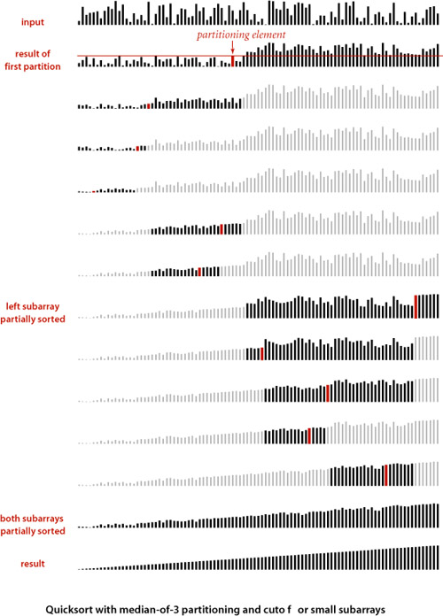
One straightforward idea is to partition the array into three parts, one each for items with keys smaller than, equal to, and larger than the partitioning item’s key. Accomplishing this partitioning is more complicated than the 2-way partitioning that we have been using, and various different methods have been suggested for the task. It was a classical programming exercise popularized by E. W. Dijkstra as the Dutch National Flag problem, because it is like sorting an array with three possible key values, which might correspond to the three colors on the flag.
Dijkstra’s solution to this problem leads to the remarkably simple partition code shown on the next page. It is based on a single left-to-right pass through the array that maintains a pointer lt such that a[lo..lt-1] is less than v, a pointer gt such that a[gt+1, hi] is greater than v, and a pointer i such that a[lt..i-1] are equal to v and a[i..gt] are not yet examined. Starting with i equal to lo, we process a[i] using the 3-way comparison given us by the Comparable interface (instead of using less()) to directly handle the three possible cases:
• a[i] less than v: exchange a[lt] with a[i] and increment both lt and i
• a[i] greater than v: exchange a[i] with a[gt] and decrement gt
• a[i] equal to v: increment i
Each of these operations both maintains the invariant and decreases the value of gt-i (so that the loop terminates). Furthermore, every item encountered leads to an exchange except for those items with keys equal to the partitioning item’s key.
Though this code was developed not long after quicksort in the 1970s, it fell out of favor because it uses many more exchanges than the standard 2-way partitioning method for the common case when the number of duplicate keys in the array is not high. In the 1990s J. Bentley and D. McIlroy developed a clever implementation that overcomes this problem (see EXERCISE 2.3.22), and observed that 3-way partitioning makes quicksort asymptotically faster than mergesort and other methods in practical situations involving large numbers of equal keys. Later, J. Bentley and R. Sedgewick developed a proof of this fact, which we discuss next.
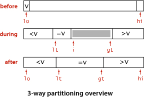
But we proved that mergesort is optimal. How have we defeated that lower bound? The answer to this question is that PROPOSITION I in SECTION 2.2 addresses worst-case performance over all possible inputs, while now we are looking at worst-case performance with some information about the key values at hand. Mergesort does not guarantee optimal performance for any given distribution of duplicates in the input: for example, mergesort is linearithmic for a randomly ordered array that has only a constant number of distinct key values, but quicksort with 3-way partitioning is linear for such an array. Indeed, by examining the visual trace above, you can see that N times the number of key values is a conservative bound on the running time.
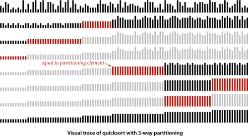
The analysis that makes these notions precise takes the distribution of key values into account. Given N keys with k distinct key values, for each i from 1 to k define fi to be frequency of occurrence of the ith key value and pi to be fi / N, the probability that the ith key value is found when a random entry of the array is sampled. The Shannon entropy of the keys (a classic measure of their information content) is defined as
H = − (p1 lg p1 + p2 lg p2 + . . . + pk lg pk)
Given any array of items to be sorted, we can calculate its entropy by counting the frequency of each key value. Remarkably, we can also derive from the entropy both a lower bound on the number of compares and an upper bound on the number of compares used by quicksort with 3-way partitioning.
Note that H = lg N when the keys are all distinct (all the probabilities are 1/N), which is consistent with PROPOSITION I in SECTION 2.2 and PROPOSITION K. The worst case for 3-way partitioning happens when the keys are distinct; when duplicate keys are present, it can do much better than mergesort. More important, these two properties together imply that quicksort with 3-way partitioning is entropy-optimal, in the sense that the average number of compares used by the best possible compare-based sorting algorithm and the average number of compares used by 3-way quicksort are within a constant factor of one another, for any given distribution of input key values.
As with standard quicksort, the running time tends to the average as the array size grows, and large deviations from the average are extremely unlikely, so that you can depend on 3-way quicksort’s running time to be proportional to N times the entropy of the distribution of input key values. This property of the algorithm is important in practice because it reduces the time of the sort from linearithmic to linear for arrays with large numbers of duplicate keys. The order of the keys is immaterial, because the algorithm shuffles them to protect against the worst case. The distribution of keys defines the entropy and no compare-based algorithm can use fewer compares than defined by the entropy. This ability to adapt to duplicates in the input makes 3-way quicksort the algorithm of choice for a library sort—clients that sort arrays containing large numbers of duplicate keys are not unusual.
A CAREFULLY TUNED VERSION of quicksort is likely to run significantly faster on most computers for most applications than will any other compare-based sorting method. Quicksort is widely used throughout today’s computational infrastructure because the mathematical models that we have discussed suggest that it will outperform other methods in practical applications, and extensive experiments and experience over the past several decades have validated that conclusion.
We will see in CHAPTER 5 that this is not quite the end of the story in the development of sorting algorithms, because is it possible to develop algorithms that do not use compares at all! But a version of quicksort turns out to be best in that situation, as well.
Q & A
Q. Is there some way to just divide the array into two halves, rather than letting the partitioning element fall where it may?
A. That is a question that stumped experts for over a decade. It is tantamount to finding the median key value in the array and then partitioning on that value. We discuss the problem of finding the median on page 346. It is possible to do so in linear time, but the cost of doing so with known algorithms (which are based on quicksort partitioning!) far exceeds the 39 percent savings available from splitting the array into equal parts.
Q. Randomly shuffling the array seems to take a significant fraction of the total time for the sort. Is doing so really worthwhile?
A. Yes. It protects against the worst case and makes the running time predictable. Hoare proposed this approach when he presented the algorithm in 1960—it is a prototypical (and among the first) randomized algorithm.
Q. Why all the focus on items with equal keys?
A. The issue directly impacts performance in practical situations. It was overlooked by many for decades, with the result that some older implementations of quicksort take quadratic time for arrays with large numbers of items with equal keys, which certainly do arise in applications. Better implementations such as ALGORITHM 2.5 take linearithmic time for such arrays, but improving that to linear-time as in the entropy-optimal sort at the end of this section is worthwhile in many situations.
Exercises
2.3.1 Show, in the style of the trace given with partition(), how that method patitions the array E A S Y Q U E S T I O N.
2.3.2 Show, in the style of the quicksort trace given in this section, how quicksort sorts the array E A S Y Q U E S T I O N (for the purposes of this exercise, ignore the initial shuffle).
2.3.3 What is the maximum number of times during the execution of Quick.sort() that the largest item can be exchanged, for an array of length N?
2.3.4 Suppose that the initial random shuffle is omitted. Give six arrays of ten elements for which Quick.sort() uses the worst-case number of compares.
2.3.5 Give a code fragment that sorts an array that is known to consist of items having just two distinct keys.
2.3.6 Write a program to compute the exact value of CN, and compare the exact value with the approximation 2N ln N, for N = 100, 1,000, and 10,000.
2.3.7 Find the expected number of subarrays of size 0, 1, and 2 when quicksort is used to sort an array of N items with distinct keys. If you are mathematically inclined, do the math; if not, run some experiments to develop hypotheses.
2.3.8 About how many compares will Quick.sort() make when sorting an array of N items that are all equal?
2.3.9 Explain what happens when Quick.sort() is run on an array having items with just two distinct keys, and then explain what happens when it is run on an array having just three distinct keys.
2.3.10 Chebyshev’s inequality says that the probability that a random variable is more than k standard deviations away from the mean is less than 1/k2. For N = 1 million, use Chebyshev’s inequality to bound the probability that the number of compares used by quicksort is more than 100 billion (.1 N2).
2.3.11 Suppose that we scan over items with keys equal to the partitioning item’s key instead of stopping the scans when we encounter them. Show that the running time of this version of quicksort is quadratic for all arrays with just a constant number of distinct keys.
2.3.12 Show, in the style of the trace given with the code, how the entropy-optimal sort first partitions the array B A B A B A B A C A D A B R A.
2.3.13 What is the recursive depth of quicksort, in the best, worst, and average cases? This is the size of the stack that the system needs to keep track of the recursive calls. See EXERCISE 2.3.20 for a way to guarantee that the recursive depth is logarithmic in the worst case.
2.3.14 Prove that when running quicksort on an array with N distinct items, the probability of comparing the ith and jth largest items is 2/(j − i). Then use this result to prove PROPOSITION K.
Creative Problems
2.3.15 Nuts and bolts. (G. J. E. Rawlins) You have a mixed pile of N nuts and N bolts and need to quickly find the corresponding pairs of nuts and bolts. Each nut matches exactly one bolt, and each bolt matches exactly one nut. By fitting a nut and bolt together, you can see which is bigger, but it is not possible to directly compare two nuts or two bolts. Give an efficient method for solving the problem.
2.3.16 Best case. Write a program that produces a best-case array (with no duplicates) for sort() in ALGORITHM 2.5: an array of N items with distinct keys having the property that every partition will produce subarrays that differ in size by at most 1 (the same subarray sizes that would happen for an array of N equal keys). (For the purposes of this exercise, ignore the initial shuffle.)
The following exercises describe variants of quicksort. Each of them calls for an implementation, but naturally you will also want to use SortCompare for experiments to evaluate the effectiveness of each suggested modification.
2.3.17 Sentinels. Modify the code in ALGORITHM 2.5 to remove both bounds checks in the inner while loops. The test against the left end of the subarray is redundant since the partitioning item acts as a sentinel (v is never less than a[lo]). To enable removal of the other test, put an item whose key is the largest in the whole array into a[length-1] just after the shuffle. This item will never move (except possibly to be swapped with an item having the same key) and will serve as a sentinel in all subarrays involving the end of the array. Note: When sorting interior subarrays, the leftmost entry in the subarray to the right serves as a sentinel for the right end of the subarray.
2.3.18 Median-of-3 partitioning. Add median-of-3 partitioning to quicksort, as described in the text (see page 296). Run doubling tests to determine the effectiveness of the change.
2.3.19 Median-of-5 partitioning. Implement a quicksort based on partitioning on the median of a random sample of five items from the subarray. Put the items of the sample at the appropriate ends of the array so that only the median participates in partitioning. Run doubling tests to determine the effectiveness of the change, in comparison both to the standard algorithm and to median-of-3 partitioning (see the previous exercise). Extra credit: Devise a median-of-5 algorithm that uses fewer than seven compares on any input.
2.3.20 Nonrecursive quicksort. Implement a nonrecursive version of quicksort based on a main loop where a subarray is popped from a stack to be partitioned, and the resulting subarrays are pushed onto the stack. Note: Push the larger of the subarrays onto the stack first, which guarantees that the stack will have at most lg N entries.
2.3.21 Lower bound for sorting with equal keys. Complete the first part of the proof of PROPOSITION M by following the logic in the proof of PROPOSITION I and using the observation that there are N! / f1!f2! . . . fk! different ways to arrange keys with k different values, where the i th value appears with frequency fi (= Npi, in the notation of PROPOSITION M), with f1+ . . . +fk = N.
2.3.22 Fast 3-way partitioning. (J. Bentley and D. McIlroy) Implement an entropy-optimal sort based on keeping item’s with equal keys at both the left and right ends of the subarray. Maintain indices p and q such that a[lo..p-1] and a[q+1..hi] are all equal to a[lo], an index i such that a[p..i-1] are all less than a[lo], and an index j such that a[j+1..q] are all greater than a[lo]. Add to the inner partitioning loop code to swap a[i] with a[p] (and increment p) if it is equal to v and to swap a[j] with a[q] (and decrement q) if it is equal to v before the usual comparisons of a[i] and a[j] with v. After the partitioning loop has terminated, add code to swap the items with equal keys into position. Note: This code complements the code given in the text, in the sense that it does extra swaps for keys equal to the partitioning item’s key, while the code in the text does extra swaps for keys that are not equal to the partitioning item’s key.
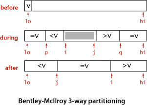
2.3.23 Java system sort. Add to your implementation from EXERCISE 2.3.22 code to use the Tukey ninther to compute the partitioning item—choose three sets of three items, take the median of each, then use the median of the three medians as the partitioning item. Also, add a cutoff to insertion sort for small subarrays.
2.3.24 Samplesort. (W. Frazer and A. McKellar) Implement a quicksort based on using a sample of size 2k − 1. First, sort the sample, then arrange to have the recursive routine partition on the median of the sample and to move the two halves of the rest of the sample to each subarray, such that they can be used in the subarrays, without having to be sorted again. This algorithm is called samplesort.
Experiments
2.3.25 Cutoff to insertion sort. Implement quicksort with a cutoff to insertion sort for subarrays with less than M elements, and empirically determine the value of M for which quicksort runs fastest in your computing environment to sort random arrays of N doubles, for N = 103, 104, 105, and 106. Plot average running times for M from 0 to 30 for each value of M. Note: You need to add a three-argument sort() method to ALGORITHM 2.2 for sorting subarrays such that the call Insertion.sort(a, lo, hi) sorts the subarray a[lo..hi].
2.3.26 Subarray sizes. Write a program that plots a histogram of the subarray sizes left for insertion sort when you run quicksort for an array of size N with a cutoff for subarrays of size less than M. Run your program for M=10, 20, and 50 and N = 105.
2.3.27 Ignore small subarrays. Run experiments to compare the following strategy for dealing with small subarrays with the approach described in EXERCISE 2.3.25: Simply ignore the small subarrays in quicksort, then run a single insertion sort after the quicksort completes. Note: You may be able to estimate the size of your computer’s cache memory with these experiments, as the performance of this method is likely to degrade when the array does not fit in the cache.
2.3.28 Recursion depth. Run empirical studies to determine the average recursive depth used by quicksort with cutoff for arrays of size M, when sorting arrays of N distinct elements, for M=10, 20, and 50 and N = 103, 104, 105, and 106.
2.3.29 Randomization. Run empirical studies to compare the effectiveness of the strategy of choosing a random partitioning item with the strategy of initially randomizing the array (as in the text). Use a cutoff for arrays of size M, and sort arrays of N distinct elements, for M=10, 20, and 50 and N = 103, 104, 105, and 106.
2.3.30 Corner cases. Test quicksort on large nonrandom arrays of the kind described in EXERCISES 2.1.35 and 2.1.36 both with and without the initial random shuffle. How does shuffling affect its performance for these arrays?
2.3.31 Histogram of running times. Write a program that takes command-line arguments N and T, does T trials of the experiment of running quicksort on an array of N random Double values, and plots a histogram of the observed running times. Run your program for N = 103, 104, 105, and 106, with T as large as you can afford to make the curves smooth. Your main challenge for this exercise is to appropriately scale the experimental results.
2.4 Priority Queues
MANY APPLICATIONS REQUIRE that we process items having keys in order, but not necessarily in full sorted order and not necessarily all at once. Often, we collect a set of items, then process the one with the largest key, then perhaps collect more items, then process the one with the current largest key, and so forth. For example, you are likely to have a computer (or a cellphone) that is capable of running several applications at the same time. This effect is typically achieved by assigning a priority to events associated with applications, then always choosing to process next the highest-priority event. For example, most cellphones are likely to process an incoming call with higher priority than a game application.
An appropriate data type in such an environment supports two operations: remove the maximum and insert. Such a data type is called a priority queue. Using priority queues is similar to using queues (remove the oldest) and stacks (remove the newest), but implementing them efficiently is more challenging.
In this section, after a short discussion of elementary representations where one or both of the operations take linear time, we consider a classic priority-queue implementation based on the binary heap data structure, where items are kept in an array, subject to certain ordering constraints that allow for efficient (logarithmic-time) implementations of remove the maximum and insert.
Some important applications of priority queues include simulation systems, where the keys correspond to event times, to be processed in chronological order; job scheduling, where the keys correspond to priorities indicating which tasks are to be performed first; and numerical computations, where the keys represent computational errors, indicating in which order we should deal with them. We consider in CHAPTER 6 a detailed case study showing the use of priority queues in a particle-collision simulation.
We can use any priority queue as the basis for a sorting algorithm by inserting a sequence of items, then successively removing the smallest to get them out, in order. An important sorting algorithm known as heapsort also follows naturally from our heap-based priority-queue implementations. Later on in this book, we shall see how to use priority queues as building blocks for other algorithms. In CHAPTER 4, we shall see how priority queues are an appropriate abstraction for implementing several fundamental graph-searching algorithms; in CHAPTER 5, we shall develop a data-compression algorithm using methods from this section. These are but a few examples of the important role played by the priority queue as a tool in algorithm design.
API
The priority queue is a prototypical abstract data type (see SECTION 1.2): it represents a set of values and operations on those values, and it provides a convenient abstraction that allows us to separate application programs (clients) from various implementations that we will consider in this section. As in SECTION 1.2, we precisely define the operations by specifying an applications programming interface (API) that provides the information needed by clients. Priority queues are characterized by the remove the maximum and insert operations, so we shall focus on them. We use the method names delMax() for remove the maximum and insert() for insert. By convention, we will compare keys only with a helper less() method, as we have been doing for sorting. Thus, if items can have duplicate keys, maximum means any item with the largest key value. To complete the API, we also need to add constructors (like the ones we used for stacks and queues) and a test if empty operation. For flexibility, we use a generic implementation with a parameterized type Key that implements the Comparable interface. This choice eliminates our distinction between items and keys and enables clearer and more compact descriptions of data structures and algorithms. For example, we refer to the “largest key” instead of the “largest item” or the “item with the largest key.”
For convenience in client code, the API includes three constructors, which enable clients to build priority queues of an initial fixed size (perhaps initialized with a given array of keys). To clarify client code, we will use a separate class MinPQ whenever appropriate, which is the same as MaxPQ except that it has a delMin() method that deletes and returns an item with the smallest key in the queue. Any MaxPQ implementation is easily converted into a MinPQ implementation and vice versa, simply by reversing the sense of the comparison in less().
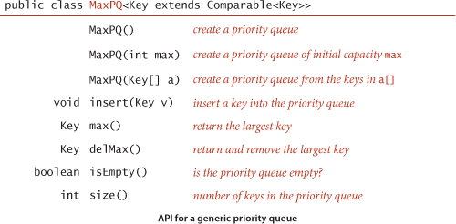
A priority-queue client
To appreciate the value of the priority-queue abstraction, consider the following problem: You have a huge input stream of N strings and associated integer values, and your task is to find the largest or smallest M integers (and associated strings) in the input stream. You might imagine the stream to be financial transactions, where your interest is to find the big ones, or pesticide levels in an agricultural product, where your interest is to find the small ones, or requests for service, or results from a scientific experiment, or whatever. In some applications, the size of the input stream is so huge that it is best to consider it to be unbounded. One way to address this problem would be to sort the input stream and take the M largest keys from the result, but we have just stipulated that the input stream is too large for that. Another approach would be to compare each new key against the M largest seen so far, but that is also likely to be prohibitively expensive unless M is small. With priority queues, we can solve the problem with the MinPQ client TopM on the next page provided that we can develop efficient implementations of both insert() and delMin(). That is precisely our aim in this section. For the huge values of N that are likely to be encountered in our modern computational infrastructure, these implementations can make the difference between being able to address such a problem and not having the resources to do it at all.
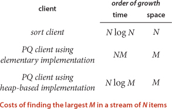
Elementary implementations
The basic data structures that we discussed in CHAPTER 1 provide us with four immediate starting points for implementing priority queues. We can use an array or a linked list, kept in order or unordered. These implementations are useful for small priority queues, situations where one of the two operations are predominant, or situations where some assumptions can be made about the order of the keys involved in the operations. Since these implementations are elementary, we will be content with brief descriptions here in the text and leave the code for exercises (see EXERCISE 2.4.3).
Array representation (unordered)
Perhaps the simplest priority-queue implementation is based on our code for pushdown stacks in SECTION 2.1. The code for insert in the priority queue is the same as for push in the stack. To implement remove the maximum, we can add code like the inner loop of selection sort to exchange the maximum item with the item at the end and then delete that one, as we did with pop() for stacks. As with stacks, we can add resizing-array code to ensure that the data structure is always at least one-quarter full and never overflows.
Array representation (ordered)
Another approach is to add code for insert to move larger entries one position to the right, thus keeping the keys in the array in order (as in insertion sort). Thus, the largest entry is always at the end, and the code for remove the maximum in the priority queue is the same as for pop in the stack.
Linked-list representations
Similarly, we can start with our linked-list code for pushdown stacks, modifying either the code for pop() to find and return the maximum or the code for push() to keep keys in reverse order and the code for pop() to unlink and return the first (maximum) item on the list.
Using unordered sequences is the prototypical lazy approach to this problem, where we defer doing work until necessary (to find the maximum); using ordered sequences is the prototypical eager approach to the problem, where we do as much work as we can up front (keep the list sorted on insertion) to make later operations efficient.
The significant difference between implementing stacks or queues and implementing priority queues has to do with performance. For stacks and queues, we were able to develop implementations of all the operations that take constant time; for priority queues, all of the elementary implementations just discussed have the property that either the insert or the remove the maximum operation takes linear time in the worst case. The heap data structure that we consider next enables implementations where both operations are guaranteed to be fast.
Heap definitions
The binary heap is a data structure that can efficiently support the basic priority-queue operations. In a binary heap, the keys are stored in an array such that each key is guaranteed to be larger than (or equal to) the keys at two other specific positions. In turn, each of those keys must be larger than (or equal to) two additional keys, and so forth. This ordering is easy to see if we view the keys as being in a binary tree structure with edges from each key to the two keys known to be smaller.
Equivalently, the key in each node of a heap-ordered binary tree is smaller than or equal to the key in that node’s parent (if any). Moving up from any node, we get a nondecreasing sequence of keys; moving down from any node, we get a nonincreasing sequence of keys. In particular:
Binary heap representation
If we use a linked representation for heap-ordered binary trees, we would need to have three links associated with each key to allow travel up and down the tree (each node would have one pointer to its parent and one to each child). It is particularly convenient, instead, to use a complete binary tree like the one drawn at right. We draw such a structure by placing the root node and then proceeding down the page and from left to right, drawing and connecting two nodes beneath each node on the previous level until we have drawn N nodes. Complete trees provide the opportunity to use a compact array representation that does not involve explicit links. Specifically, we represent complete binary trees sequentially within an array by putting the nodes in level order, with the root at position 1, its children at positions 2 and 3, their children in positions 4, 5, 6, and 7, and so on.
(For brevity, from now on we drop the “binary” modifier and use the term heap when referring to a binary heap.) In a heap, the parent of the node in position k is in position k/2 and, conversely, the two children of the node in position k are in positions 2k and 2k + 1. Instead of using explicit links (as in the binary tree structures that we will consider in CHAPTER 3), we can travel up and down by doing simple arithmetic on array indices: to move up the tree from a[k] we set k to k/2; to move down the tree we set k to 2*k or 2*k+1.
Complete binary trees represented as arrays (heaps) are rigid structures, but they have just enough flexibility to allow us to implement efficient priority-queue operations. Specifically, we will use them to develop logarithmic-time insert and remove the maximum implementations. These algorithms take advantage of the capability to move up and down paths in the tree without pointers and have guaranteed logarithmic performance because of the following property of complete binary trees:
Algorithms on heaps
We represent a heap of size N in private array pq[] of length N + 1, with pq[0] unused and the heap in pq[1] through pq[N]. As for sorting algorithms, we access keys only through private helper functions less() and exch(), but since all items are in the instance variable pq[], we use the more compact implementations on the next page that do not involve passing the array name as a parameter. The heap operations that we consider work by first making a simple modification that could violate the heap condition, then traveling through the heap, modifying the heap as required to ensure that the heap condition is satisfied everywhere. We refer to this process as reheapifying, or restoring heap order.
There are two cases. When the priority of some node is increased (or a new node is added at the bottom of a heap), we have to travel up the heap to restore the heap order. When the priority of some node is decreased (for example, if we replace the node at the root with a new node that has a smaller key), we have to travel down the heap to restore the heap order. First, we will consider how to implement these two basic auxiliary operations; then, we shall see how to use them to implement insert and remove the maximum.
Bottom-up reheapify (swim)
If the heap order is violated because a node’s key becomes larger than that node’s parent’s key, then we can make progress toward fixing the violation by exchanging the node with its parent. After the exchange, the node is larger than both its children (one is the old parent, and the other is smaller than the old parent because it was a child of that node) but the node may still be larger than its parent. We can fix that violation in the same way, and so forth, moving up the heap until we reach a node with a larger key, or the root. Coding this process is straightforward when you keep in mind that the parent of the node at position k in a heap is at position k/2. The loop in swim() preserves the invariant that the only place the heap order could be violated is when the node at position k might be larger than its parent. Therefore, when we get to a place where that node is not larger than its parent, we know that the heap order is satisfied throughout the heap. To justify the method’s name, we think of the new node, having too large a key, as having to swim to a higher level in the heap.
Top-down reheapify (sink)
If the heap order is violated because a node’s key becomes smaller than one or both of that node’s children’s keys, then we can make progress toward fixing the violation by exchanging the node with the larger of its two children. This switch may cause a violation at the child; we fix that violation in the same way, and so forth, moving down the heap until we reach a node with both children smaller (or equal), or the bottom. The code again follows directly from the fact that the children of the node at position k in a heap are at positions 2k and 2k+1. To justify the method’s name, we think about the node, having too small a key, as having to sink to a lower level in the heap.
IF WE IMAGINE the heap to represent a cutthroat corporate hierarchy, with each of the children of a node representing subordinates (and the parent representing the immediate superior), then these operations have amusing interpretations. The swim() operation corresponds to a promising new manager arriving on the scene, being promoted up the chain of command (by exchanging jobs with any lower-qualified boss) until the new person encounters a higher-qualified boss. The sink() operation is analogous to the situation when the president of the company resigns and is replaced by someone from the outside. If the president’s most powerful subordinate is stronger than the new person, they exchange jobs, and we move down the chain of command, demoting the new person and promoting others until the level of competence of the new person is reached, where there is no higher-qualified subordinate. These idealized scenarios may rarely be seen in the real world, but they may help you better understand basic operation on heaps.
These sink() and swim() operations provide the basis for efficient implementation of the priority-queue API, as diagrammed below and implemented in ALGORITHM 2.6
on the next page.
Insert. We add the new key at the end of the array, increment the size of the heap, and then swim up through the heap with that key to restore the heap condition.
Remove the maximum. We take the largest item off the top, put the item from the end of the heap at the top, decrement the size of the heap, and then sink down through the heap with that key to restore the heap condition.
ALGORITHM 2.6 solves the basic problem that we posed at the beginning of this section: it is a priority-queue API implementation for which both insert and delete the maximum are guaranteed to take time logarithmic in the size of the queue.
For typical applications that require a large number of intermixed insert and remove the maximum operations in a large priority queue, PROPOSITION Q represents an important performance breakthrough, summarized in the table shown on page 312. Where elementary implementations using an ordered array or an unordered array require linear time for one of the operations, a heap-based implementation provides a guarantee that both operations complete in logarithmic time. This improvement can make the difference between solving a problem and not being able to address it at all.
Multiway heaps
It is not difficult to modify our code to build heaps based on an array representation of complete heap-ordered ternary trees, with an entry at position k larger than or equal to entries at positions 3k−1, 3k, and 3k+1 and smaller than or equal to entries at position (k+1) / 3, for all indices between 1 and N in an array of N items, and not much more difficult to use d-ary heaps for any given d. There is a tradeoff between the lower cost from the reduced tree height (logd N) and the higher cost of finding the largest of the d children at each node. This tradeoff is dependent on details of the implementation and the expected relative frequency of operations.
Array resizing
We can add a no-argument constructor, code for array doubling in insert(), and code for array halving in delMax(), just as we did for stacks in SECTION 1.3. Thus, clients need not be concerned about arbitrary size restrictions. The logarithmic time bounds implied by PROPOSITION Q are amortized when the size of the priority queue is arbitrary and the arrays are resized (see EXERCISE 2.4.22).
Immutability of keys
The priority queue contains objects that are created by clients but assumes that client code does not change the keys (which might invalidate the heap-order invariant). It is possible to develop mechanisms to enforce this assumption, but programmers typically do not do so because they complicate the code and are likely to degrade performance.
Index priority queue
In many applications, it makes sense to allow clients to refer to items that are already on the priority queue. One easy way to do so is to associate a unique integer index with each item. Moreover, it is often the case that clients have a universe of items of a known size N and perhaps are using (parallel) arrays to store information about the items, so other unrelated client code might already be using an integer index to refer to items. These considerations lead us to the following API:
A useful way of thinking of this data type is as implementing an array, but with fast access to the smallest entry in the array. Actually it does even better—it gives fast access to the minimum entry in a specified subset of an array’s entries (the ones that have been inserted. In other words, you can think of an IndexMinPQ named pq as representing a subset of an array pq[0..N-1] of items. Think of the call pq.insert(k, item) as adding k to the subset and setting pq[k] = item and the call pq.change(k, item) as setting pq[k] = item, both also maintaining data structures needed to support the other operations, most importantly delMin() (remove and return the index of the minimum key) and change() (change the item associated with an index that is already in the data structure—just as in pq[i] = item). These operations are important in many applications and are enabled by our ability to refer to the key (with the index). EXERCISE 2.4.33 describes how to extend ALGORITHM 2.6 to implement index priority queues with remarkable efficiency and with remarkably little code. Intuitively, when an item in the heap changes, we can restore the heap invariant with a sink operation (if the key decreases) and a swim operation (if the key increases). To perform the operations, we use the index to find the item in the heap. The ability to locate an item in the heap also allows us to add the delete() operation to the API.
This discussion is for a minimum-oriented queue; as usual, we also implement on the booksite a maximum-oriented version IndexMaxPQ.
Index priority-queue client
The IndexMinPQ client Multiway on page 322 solves the multiway merge problem: it merges together several sorted input streams into one sorted output stream. This problem arises in many applications: the streams might be the output of scientific instruments (sorted by time), lists of information from the web such as music or movies (sorted by title or artist name), commercial transactions (sorted by account number or time), or whatever. If you have the space, you might just read them all into an array and sort them, but with a priority queue, you can read input streams and put them in sorted order on the output no matter how long they are.
Heapsort
We can use any priority queue to develop a sorting method. We insert all the items to be sorted into a minimum-oriented priority queue, then repeatedly use remove the minimum to remove them all in order. Using a priority queue represented as an unordered array in this way corresponds to doing a selection sort; using an ordered array corresponds to doing an insertion sort. What sorting method do we get if we use a heap? An entirely different one! Next, we use the heap to develop a classic elegant sorting algorithm known as heapsort.
Heapsort breaks into two phases: heap construction, where we reorganize the original array into a heap, and the sortdown, where we pull the items out of the heap in decreasing order to build the sorted result. For consistency with the code we have studied, we use a maximum-oriented priority queue and repeatedly remove the maximum. Focusing on the task of sorting, we abandon the notion of hiding the representation of the priority queue and use swim() and sink() directly. Doing so allows us to sort an array without needing any extra space, by maintaining the heap within the array to be sorted.
Heap construction
How difficult is the process of building a heap from N given items? Certainly we can accomplish this task in time proportional to N log N, by proceeding from left to right through the array, using swim() to ensure that the items to the left of the scanning pointer make up a heap-ordered complete tree, like successive priority-queue insertions. A clever method that is much more efficient is to proceed from right to left, using sink() to make subheaps as we go. Every position in the array is the root of a small subheap; sink() works for such subheaps, as well. If the two children of a node are heaps, then calling sink() on that node makes the subtree rooted at the parent a heap. This process establishes the heap order inductively. The scan starts halfway back through the array because we can skip the subheaps of size 1. The scan ends at position 1, when we finish building the heap with one call to sink(). As the first phase of a sort, heap construction is a bit counterintuitive, because its goal is to produce a heap-ordered result, which has the largest item first in the array (and other larger items near the beginning), not at the end, where it is destined to finish.
Sortdown
Most of the work during heapsort is done during the second phase, where we remove the largest remaining item from the heap and put it into the array position vacated as the heap shrinks. This process is a bit like selection sort (taking the items in decreasing order instead of in increasing order), but it uses many fewer compares because the heap provides a much more efficient way to find the largest item in the unsorted part of the array.
ALGORITHM 2.7 is a full implementation based on these ideas, the classical heapsort algorithm, which was invented by J. W. J. Williams and refined by R. W. Floyd in 1964. Although the loops in this program seem to do different tasks (the first constructs the heap, and the second destroys the heap for the sortdown), they are both built around the sink() method. We provide an implementation outside of our priority-queue API to highlight the simplicity of the sorting algorithm (eight lines of code for sort() and another eight lines of code for sink()) and to make it an in-place sort.
As usual, you can gain some insight into the operation of the algorithm by studying a visual trace. At first, the process seems to do anything but sort, because large items are moving to the beginning of the array as the heap is being constructed. But then the method looks more like a mirror image of selection sort (except that it uses far fewer compares).
As for all of the other methods that we have studied, various people have investigated ways to improve heap-based priority-queue implementations and heapsort. We now briefly consider one of them.
Sink to the bottom, then swim
Most items reinserted into the heap during sortdown go all the way to the bottom. Floyd observed in 1964 that we can thus save time by avoiding the check for whether the item has reached its position, simply promoting the larger of the two children until the bottom is reached, then moving back up the heap to the proper position. This idea cuts the number of compares by a factor of 2 asymptotically—close to the number used by mergesort (for a randomly-ordered array). The method requires extra bookkeeping, and it is useful in practice only when the cost of compares is relatively high (for example, when we are sorting items with strings or other types of long keys).
HEAPSORT IS SIGNIFICANT in the study of the complexity of sorting (see page 279) because it is the only method that we have seen that is optimal (within a constant factor) in its use of both time and space—it is guaranteed to use ~2N lg N compares and constant extra space in the worst case. When space is very tight (for example, in an embedded system or on a low-cost mobile device) it is popular because it can be implemented with just a few dozen lines (even in machine code) while still providing optimal performance. However, it is rarely used in typical applications on modern systems because it has poor cache performance: array entries are rarely compared with nearby array entries, so the number of cache misses is far higher than for quicksort, mergesort, and even shellsort, where most compares are with nearby entries.
On the other hand, the use of heaps to implement priority queues plays an increasingly important role in modern applications, because it provides an easy way to guarantee logarithmic running time for dynamic situations where large numbers of insert and remove the maximum operations are intermixed. We will encounter several examples later in this book.
Q&A
Q. I’m still not clear on the purpose of priority queues. Why exactly don’t we just sort and then consider the items in increasing order in the sorted array?
A. In some data-processing examples such as TopM and Multiway, the total amount of data is far too large to consider sorting (or even storing in memory). If you are looking for the top ten entries among a billion items, do you really want to sort a billion-entry array? With a priority queue, you can do it with a ten-entry priority queue. In other examples, all the data does not even exist together at any point in time: we take something from the priority queue, process it, and as a result of processing it perhaps add some more things to the priority queue.
Q. Why not use Comparable, as we do for sorts, instead of the generic Item in MaxPQ?
A. Doing so would require the client to cast the return value of delMax() to an actual type, such as String. Generally, casts in client code are to be avoided.
Q. Why not use a[0] in the heap representation?
A. Doing so simplifies the arithmetic a bit. It is not difficult to implement the heap methods based on a 0-based heap where the children of a[0] are a[1] and a[2], the children of a[1] are a[3] and a[4], the children of a[2] are a[5] and a[6], and so forth, but most programmers prefer the simpler arithmetic that we use. Also, using a[0] as a sentinel value (in the parent of a[1]) is useful in some heap applications.
Q. Building a heap in heapsort by inserting items one by one seems simpler to me than the tricky bottom-up method described on page 323 in the text. Why bother?
A. For a sort implementation, it is 20 percent faster and requires half as much tricky code (no swim() needed). The difficulty of understanding an algorithm has not necessarily much to do with its simplicity, or its efficiency.
Q. What happens if I leave off the extends Comparable<Key> phrase in an implementation like MaxPQ ?
A. As usual, the easiest way for you to answer a question of this sort for yourself is to simply try it. If you do so for MaxPQ you will get a compile-time error:
MaxPQ.java:21: cannot find symbol
symbol : method compareTo(Item)
which is Java’s way of telling you that it does not know about compareTo() in Item because you neglected to declare that Item extends Comparable<Item>.
Exercises
2.4.1 Suppose that the sequence P R I O * R * * I * T * Y * * * Q U E * * * U * E (where a letter means insert and an asterisk means remove the maximum) is applied to an initially empty priority queue. Give the sequence of letters returned by the remove the maximum operations.
2.4.2 Criticize the following idea: To implement find the maximum in constant time, why not use a stack or a queue, but keep track of the maximum value inserted so far, then return that value for find the maximum?
2.4.3 Provide priority-queue implementations that support insert and remove the maximum, one for each of the following underlying data structures: unordered array, ordered array, unordered linked list, and linked list. Give a table of the worst-case bounds for each operation for each of your four implementations.
2.4.4 Is an array that is sorted in decreasing order a max-oriented heap?
2.4.5 Give the heap that results when the keys E A S Y Q U E S T I O N are inserted in that order into an initially empty max-oriented heap.
2.4.6 Using the conventions of EXERCISE 2.4.1, give the sequence of heaps produced when the operations P R I O * R * * I * T * Y * * * Q U E * * * U * E are performed on an initially empty max-oriented heap.
2.4.7 The largest item in a heap must appear in position 1, and the second largest must be in position 2 or position 3. Give the list of positions in a heap of size 31 where the kth largest (i) can appear, and (ii) cannot appear, for k=2, 3, 4 (assuming the values to be distinct).
2.4.8 Answer the previous exercise for the kth smallest item.
2.4.9 Draw all of the different heaps that can be made from the five keys A B C D E, then draw all of the different heaps that can be made from the five keys A A A B B.
2.4.10 Suppose that we wish to avoid wasting one position in a heap-ordered array pq[], putting the largest value in pq[0], its children in pq[1] and pq[2], and so forth, proceeding in level order. Where are the parents and children of pq[k]?
2.4.11 Suppose that your application will have a huge number of insert operations, but only a few remove the maximum operations. Which priority-queue implementation do you think would be most effective: heap, unordered array, or ordered array?
2.4.12 Suppose that your application will have a huge number of find the maximum operations, but a relatively small number of insert and remove the maximum operations. Which priority-queue implementation do you think would be most effective: heap, unordered array, or ordered array?
2.4.13 Describe a way to avoid the j < N test in sink().
2.4.14 What is the minimum number of items that must be exchanged during a remove the maximum operation in a heap of size N with no duplicate keys? Give a heap of size 15 for which the minimum is achieved. Answer the same questions for two and three successive remove the maximum operations.
2.4.15 Design a linear-time certification algorithm to check whether an array pq[] is a min-oriented heap.
2.4.16 For N=32, give arrays of items that make heapsort use as many and as few compares as possible.
2.4.17 Prove that building a minimum-oriented priority queue of size k then doing N − k replace the minimum (insert followed by remove the minimum) operations leaves the k largest of the N items in the priority queue.
2.4.18 In MaxPQ, suppose that a client calls insert() with an item that is larger than all items in the queue, and then immediately calls delMax(). Assume that there are no duplicate keys. Is the resulting heap identical to the heap as it was before these operations? Answer the same question for two insert() operations (the first with a key larger than all keys in the queue and the second for a key larger than that one) followed by two delMax() operations.
2.4.19 Implement the constructor for MaxPQ that takes an array of items as argument, using the bottom-up heap construction method described on page 323 in the text.
2.4.20 Prove that sink-based heap construction uses fewer than 2N compares and fewer than N exchanges.
Creative Problems
2.4.21 Elementary data structures. Explain how to use a priority queue to implement the stack, queue, and randomized queue data types from CHAPTER 1.
2.4.22 Array resizing. Add array resizing to MaxPQ, and prove bounds like those of PROPOSITION Q for array accesses, in an amortized sense.
2.4.23 Multiway heaps. Considering the cost of compares only, and assuming that it takes t compares to find the largest of t items, find the value of t that minimizes the coefficient of Nlg N in the compare count when a t-ary heap is used in heapsort. First, assume a straightforward generalization of sink(); then, assume that Floyd’s method can save one compare in the inner loop.
2.4.24 Priority queue with explicit links. Implement a priority queue using a heap-ordered binary tree, but use a triply linked structure instead of an array. You will need three links per node: two to traverse down the tree and one to traverse up the tree. Your implementation should guarantee logarithmic running time per operation, even if no maximum priority-queue size is known ahead of time.
2.4.25 Computational number theory. Write a program that prints out all integers of the form a3 + b3 where a and b are integers between 0 and N in sorted order, without using excessive space. That is, instead of computing an array of the N2 sums and sorting them, build a minimum-oriented priority queue, initially containing (03, 0, 0), (13, 1, 0), (23, 2, 0), . . ., (N3, N, 0). Then, while the priority queue is nonempty, remove the smallest item (i3 + j3, i, j), print it, and then, if j < N, insert the item (i3 + (j+1)3, i, j+1). Use this program to find all distinct integers a, b, c, and d between 0 and 106 such that a3 + b3 = c3 + d3.
2.4.26 Heap without exchanges. Because the exch() primitive is used in the sink() and swim() operations, the items are loaded and stored twice as often as necessary. Give more efficient implementations that avoid this inefficiency, a la insertion sort (see EXERCISE 2.1.25).
2.4.27 Find the minimum. Add a min() method to MaxPQ. Your implementation should use constant time and constant extra space.
2.4.28 Selection filter. Write a TopM client that reads points (x, y, z) from standard input, takes a value M from the command line, and prints the M points that are closest to the origin in Euclidean distance. Estimate the running time of your client for N = 108 and M = 104.
2.4.29 Min/max priority queue. Design a data type that supports the following operations: insert, delete the maximum, and delete the minimum (all in logarithmic time); and find the maximum and find the minimum (both in constant time). Hint: Use two heaps.
2.4.30 Dynamic median-finding. Design a data type that supports insert in logarithmic time, find the median in constant time, and delete the median in logarithmic time. Hint: Use a min-heap and a max-heap.
2.4.31 Fast insert. Develop a compare-based implementation of the MinPQ API such that insert uses ~ log log N compares and delete the minimum uses ~2 log N compares. Hint: Use binary search on parent pointers to find the ancestor in swim().
2.4.32 Lower bound. Prove that it is impossible to develop a compare-based implementation of the MinPQ API such that both insert and delete the minimum guarantee to use ~N log log N compares.
2.4.33 Index priority-queue implementation. Implement the basic operations in the index priority-queue API on page 320 by modifying ALGORITHM 2.6 as follows: Change pq[] to hold indices, add an array keys[] to hold the key values, and add an array qp[] that is the inverse of pq[] — qp[i] gives the position of i in pq[] (the index j such that pq[j] is i). Then modify the code in ALGORITHM 2.6 to maintain these data structures. Use the convention that qp[i] = -1 if i is not on the queue, and include a method contains() that tests this condition. You need to modify the helper methods exch() and less() but not sink() or swim().
Partial solution:
2.4.34 Index priority-queue implementation (additional operations). Add minIndex(), change(), and delete() to your implementation of EXERCISE 2.4.33.
Solution:
2.4.35 Sampling from a discrete probability distribution. Write a class Sample with a constructor that takes an array p[] of double values as argument and supports the following two operations: random()—return an index i with probability p[i]/T (where T is the sum of the numbers in p[])—and change(i, v)—change the value of p[i] to v. Hint: Use a complete binary tree where each node has implied weight p[i]. Store in each node the cumulative weight of all the nodes in its subtree. To generate a random index, pick a random number between 0 and T and use the cumulative weights to determine which branch of the subtree to explore. When updating p[i], change all of the weights of the nodes on the path from the root to i. Avoid explicit pointers, as we do for heaps.
Experiments
2.4.36 Performance driver I. Write a performance driver client program that uses insert to fill a priority queue, then uses remove the maximum to remove half the keys, then uses insert to fill it up again, then uses remove the maximum to remove all the keys, doing so multiple times on random sequences of keys of various lengths ranging from small to large; measures the time taken for each run; and prints out or plots the average running times.
2.4.37 Performance driver II. Write a performance driver client program that uses insert to fill a priority queue, then does as many remove the maximum and insert operations as it can do in 1 second, doing so multiple times on random sequences of keys of various lengths ranging from small to large; and prints out or plots the average number of remove the maximum operations it was able to do.
2.4.38 Exercise driver. Write an exercise driver client program that uses the methods in our priority-queue interface of ALGORITHM 2.6 on difficult or pathological cases that might turn up in practical applications. Simple examples include keys that are already in order, keys in reverse order, all keys the same, and sequences of keys having only two distinct values.
2.4.39 Cost of construction. Determine empirically the percentage of time heapsort spends in the construction phase for N = 103, 106, and 109.
2.4.40 Floyd’s method. Implement a version of heapsort based on Floyd’s sink-to-the-bottom-and-then-swim idea, as described in the text. Count the number of compares used by your program and the number of compares used by the standard implementation, for randomly ordered distinct keys with N = 103, 106, and 109.
2.4.41 Multiway heaps. Implement a version of heapsort based on complete heap-ordered 3-ary and 4-ary trees, as described in the text. Count the number of compares used by each and the number of compares used by the standard implementation, for randomly ordered distinct keys with N = 103, 106, and 109.
2.4.42 Preorder heaps. Implement a version of heapsort based on the idea of representing the heap-ordered tree in preorder rather than in level order. Count the number of compares used by your program and the number of compares used by the standard implementation, for randomly ordered keys with N = 103, 106, and 109.
2.5 Applications
SORTING ALGORITHMS and priority queues are widely used in a broad variety of applications. Our purpose in this section is to briefly survey some of these applications, consider ways in which the efficient methods that we have considered play a critical role in such applications, and discuss some of the steps needed to make use of our sort and priority-queue code.
A prime reason why sorting is so useful is that it is much easier to search for an item in a sorted array than in an unsorted one. For over a century, people found it easy to look up someone’s phone number in a phone book where items are sorted by last name. Now digital music players organize song files by artist name or song title; search engines display search results in descending order of importance; spreadsheets display columns sorted by a particular field; matrix-processing packages sort the real eigenvalues of a symmetric matrix in descending order; and so forth. Other tasks are also made easier once an array is in sorted order: from looking up an item in the sorted index in the back of this book; to removing duplicates from a long list such as a mailing list, a list of voters, or a list of websites; to performing statistical calculations such as removing outliers, finding the median, or computing percentiles.
Sorting also arises as a critical subproblem in many applications that appear to have nothing to do with sorting at all. Data compression, computer graphics, computational biology, supply-chain management, combinatorial optimization, social choice, and voting are but a few of many examples. The algorithms that we have considered in this chapter play a critical role in the development of effective algorithms in each of the later chapters in this book.
Most important is the system sort, so we begin by considering a number of practical considerations that come into play when building a sort for use by a broad variety of clients. While some of these topics are specific to Java, they each reflect challenges that need to be met in any system.
Our primary purpose is to demonstrate that, even though we have used mechanisms that are relatively simple, the sorting implementations that we are studying are widely applicable. The list of proven applications of fast sorting algorithms is vast, so we can consider just a small fraction of them: some scientific, some algorithmic, and some commercial. You will find many more examples in the exercises, and many more than that on the booksite. Moreover, we will often refer back to this chapter to effectively address the problems that we later consider in this book!
Sorting various types of data
Our implementations sort arrays of Comparable objects. This Java convention allows us to use Java’s callback mechanism to sort arrays of objects of any type that implements the Comparable interface. As described in SECTION 2.1, implementing Comparable amounts to defining a compareTo() method that implements a natural ordering for the type. We can use our code immediately to sort arrays of type String, Integer, Double, and other types such as File and URL, because these data types all implement Comparable. Being able to use the same code for all of those types is convenient, but typical applications involve working with data types that are defined for use within the application. Accordingly it is common to implement a compareTo() method for user-defined data types, so that they implement Comparable, thus enabling client code to sort arrays of that type (and build priority queues of values of that type).
Transaction example
A prototypical breeding ground for sorting applications is commercial data processing. For example, imagine that a company engaged in internet commerce maintains a record for each transaction involving a customer account that contains all of the pertinent information, such as the customer name, date, amount, and so forth. Nowadays, a successful company needs to be able to handle millions and millions of such transactions. As we saw in EXERCISE 2.1.21, it is reasonable to decide that a natural ordering of such transactions is that they be ordered by amount, which we can implement by adding an appropriate compareTo() method in the class definition. With such a definition, we could process an array a[] of Transactions by, for example, first sorting it with the call Quick.sort(a). Our sorting methods know nothing about our Transaction data type, but Java’s Comparable interface allows us to define a natural ordering so that we can use any of our methods to sort Transaction objects. Alternatively, we might specify that Transaction objects are to be ordered by date by implementing compareTo() to compare the Date fields. Since Date objects are themselves Comparable, we can just invoke the compareTo() method in Date rather than having to implement it from scratch. It is also reasonable to consider ordering this data by it customer field; arranging to allow clients the flexibility to switch among multiple different orders is an interesting challenge that we will soon consider.
Pointer sorting
The approach we are using is known in the classical literature as pointer sorting, so called because we process references to items and do not move the data itself. In programming languages such as C and C++, programmers explicitly decide whether to manipulate data or pointers to data; in Java, pointer manipulation is implicit. Except for primitive numeric types, we always manipulate references to objects (pointers), not the objects themselves. Pointer sorting adds a level of indirection: the array contains references to the objects to be sorted, not the objects themselves. We briefly consider some associated issues, in the context of sorting. With multiple reference arrays, we can have multiple different sorted representations of different parts of a single body of data (perhaps using multiple keys, as described below).
Keys are immutable
It stands to reason that an array might not remain sorted if a client is allowed to change the values of keys after the sort. Similarly, a priority queue can hardly be expected to operate properly if the client can change the values of keys between operations. In Java, it is wise to ensure that key values do not change by using immutable keys. Most of the standard data types that you are likely to use as keys, such as String, Integer, Double, and File, are immutable.
Exchanges are inexpensive
Another advantage of using references is that we avoid the cost of moving full items. The cost saving is significant for arrays with large items (and small keys) because the compare needs to access just a small part of the item, and most of the item is not even touched during the sort. The reference approach makes the cost of an exchange roughly equal to the cost of a compare for general situations involving arbitrarily large items (at the cost of the extra space for the references). Indeed, if the keys are long, the exchanges might even wind up being less costly than the compare. One way to study the performance of algorithms that sort arrays of numbers is to simply look at the total number of compares and exchanges they use, implicitly making the assumption that the cost of exchanges is the same as the cost of compares. Conclusions based on this assumption are likely to apply to a broad class of applications in Java, because we are sorting reference objects.
Alternate orderings
There are many applications where we want to use different orders for the objects that we are sorting, depending on the situation. The Java Comparator interface allows us to build multiple orders within a single class. It has a single public method compare() that compares two objects. If we have a data type that implements this interface, we can pass a Comparator to sort() (which passes it to less()) as in the example on the next page. The Comparator mechanism allows us to sort arrays of any type of object, using any total order that we wish to define for them. Using a Comparator instead of working with Comparable types better separates the definition of the type from the definition of what it means to compare two objects of that type. Indeed, there are typically many possible ways to compare objects, and the Comparator mechanism allows us to choose among them. For instance, to sort an array a[] of strings without regard to whether characters are uppercase or lowercase you can just call Insertion.sort(a, String.CASE_INSENSITIVE_ORDER) which makes use of the CASE_INSENSITIVE_ORDER comparator defined in Java’s String class. As you can imagine, the precise rules for ordering strings are complicated and quite different for various natural languages, so Java has many String comparators.
Items with multiple keys
In typical applications, items have multiple instance variables that might need to serve as sort keys. In our transaction example, one client may need to sort the transaction list by customer (for example, to bring together all transactions involving each customer); another client might need to sort the list by amount (for example, to identify high-value transactions); and other clients might need to use other fields as sort keys. The Comparator mechanism is precisely what we need to allow this flexibility. We can define multiple comparators, as in the alternate implementation of Transaction shown on the bottom of the next page. With this definition, a client can sort an array of Transaction objects by time with the call
Insertion.sort(a, new Transaction.WhenOrder())
or by amount with the call
Insertion.sort(a, new Transaction.HowMuchOrder()).
The sort does each compare through a callback to the compare() method in Transaction that is specified by the client code. To avoid the cost of making a new Comparator object for each sort, we could use public final instance variables to define the comparators (as Java does for CASE_INSENSITIVE_ORDER).
Priority queues with comparators
The same flexibility to use comparators is also useful for priority queues. Extending our standard implementation in ALGORITHM 2.6 to support comparators involves the following steps:
• Import java.util.Comparator.
• Add to MaxPQ an instance variable comparator and a constructor that takes a comparator as argument and initializes comparator to that value.
• Add code to less() that checks whether comparator is null (and uses it if it is not null).
For example, with these changes, you could build different priority queues with Transaction keys, using the time, place, or account number for the ordering. If you remove the Key extends Comparable<Key> phrase from MinPQ, you even can support keys with no natural order.
Stability
A sorting method is stable if it preserves the relative order of equal keys in the array. This property is frequently important. For example, consider an internet commerce application where we have to process a large number of events that have locations and timestamps. To begin, suppose that we store events in an array as they arrive, so they are in order of the timestamp in the array. Now suppose that the application requires that the transactions be separated out by location for further processing. One easy way to do so is to sort the array by location. If the sort is unstable, the transactions for each city may not necessarily be in order by timestamp after the sort. Often, programmers who are unfamiliar with stability are surprised, when they first encounter the situation, by the way an unstable algorithm seems to scramble the data. Some of the sorting methods that we have considered in this chapter are stable (insertion sort and mergesort); many are not (selection sort, shellsort, quicksort, and heapsort). There are ways to trick any sort into stable behavior (see EXERCISE 2.5.18), but using a stable algorithm is generally preferable when stability is an essential requirement. It is easy to take stability for granted; actually, no practical method in common use achieves stability without using significant extra time or space (researchers have developed algorithms that do so, but applications programmers have judged them too complicated to be useful).
Which sorting algorithm should I use?
We have considered numerous sorting algorithms in this chapter, so this question is natural. Knowing which algorithm is best possible depends heavily on details of the application and implementation, but we have studied some general-purpose methods that can be nearly as effective as the best possible for a wide variety of applications.
The table at the bottom of this page is a general guide that summarizes the important characteristics of the sort algorithms that we have studied in this chapter. In all cases but shellsort (where the growth rate is only an estimate), insertion sort (where the growth rate depends on the order of the input keys), and both versions of quicksort (where the growth rate is probabilitic and may depend on the distribution of input key values), multiplying these growth rates by appropriate constants gives an effective way to predict running time. The constants involved are partly algorithm-dependent (for example, heapsort uses twice the number of compares as mergesort and both do many more array accesses than quicksort) but are primarily dependent on the implementation, the Java compiler, and your computer, which determine the number of machine instructions that are executed and the time that each requires. Most important, since they are constants, you can generally predict the running time for large N by running experiments for smaller N and extrapolating, using our standard doubling protocol.
Thus, in most practical situations, quicksort is the method of choice. Still, given the broad reach of sorting and the broad variety of computers and systems, a flat statement like this is difficult to justify. For example, we have already seen one notable exception: if stability is important and space is available, mergesort might be best. We will see other exceptions in CHAPTER 5. With tools like SortCompare and a considerable amount of time and effort, you can do a more detailed study of comparative performance of these algorithms and the refinements that we have discussed for your computer, as discussed in several exercises at the end of this section. Perhaps the best way to interpret PROPERTY T is as saying that you certainly should seriously consider using quicksort in any sort application where running time is important.
Sorting primitive types
In some performance-critical applications, the focus may be on sorting numbers, so it is reasonable to avoid the costs of using references and sort primitive types instead. For example, consider the difference between sorting an array of double values and sorting an array of Double values. In the former case, we exchange the numbers themselves and put them in order in the array; in the latter, we exchange references to Double objects, which contain the numbers. If we are doing nothing more than sorting a huge array of numbers, we avoid paying the cost of storing an equal number of references plus the extra cost of accessing the numbers through the references, not to mention the cost of invoking compareTo() and less() methods. We can develop efficient versions of our sort codes for such purposes by replacing Comparable with the primitive type name, and redefining less() or just replacing calls to less() with code like a[i] < a[j] (see EXERCISE 2.1.26).
Java system sort
As an example of applying the information given in the table on page 342, consider Java’s primary system sort method, java.util.Arrays.sort(). With overloading of argument types, this name actually represents a collection of methods:
• A different method for each primitive type
• A method for data types that implement Comparable
• A method that uses a Comparator
Java’s systems programmers have chosen to use quicksort (with 3-way partitioning) to implement the primitive-type methods, and mergesort for reference-type methods. The primary practical implications of these choices are, as just discussed, to trade speed and memory usage (for primitive types) for stability (for reference types).
THE ALGORITHMS AND IDEAS that we have been considering are an essential part of many modern systems, including Java. When developing Java programs to address an application, you are likely to find that Java’s Arrays.sort() implementations (perhaps supplemented by your own implementation(s) of compareTo() and/or compare()) will meet your needs, because you will be using 3-way quicksort or mergesort, both proven classic algorithms.
In this book, we generally will use our own Quick.sort() (usually) or Merge.sort() (when stability is important and space is not) in sort clients. You may feel free to use Arrays.sort() unless you have a good reason to use another specific method.
Reductions
The idea that we can use sorting algorithms to solve other problems is an example of a basic technique in algorithm design known as reduction. We consider reduction in detail in CHAPTER 6 because of its importance in the theory of algorithms—in the meantime, we will consider several practical examples. A reduction is a situation where an algorithm developed for one problem is used to solve another. Applications programmers are quite used to the concept of reduction (whether or not it is explicitly articulated)—every time you make use of a method that solves problem B in order to solve problem A, you are doing a reduction from A to B. Indeed, one goal in implementing algorithms is to facilitate reductions by making the algorithms useful for as wide a variety as possible of applications. We begin with a few elementary examples for sorting. Many of these take the form of algorithmic puzzles where a quadratic brute-force algorithm is immediate. It is often the case that sorting the data first makes it easy to finish solving the problem in linear additional time, thus reducing the total cost from quadratic to linearithmic.
Duplicates
Are there any duplicate keys in an array of Comparable objects? How many distinct keys are there? Which value appears most frequently? For small arrays, these kinds of questions are easy to answer with a quadratic algorithm that compares each array entry with each other array entry. For large arrays, using a quadratic algorithm is not feasible. With sorting, you can answer these questions in linearithmic time: first sort the array, then make a pass through the sorted array, taking note of duplicate keys that appear consecutively in the ordered array. For example, the code fragment at right counts the distinct keys in an array. With simple modifications to this code, you can answer the questions above and perform tasks such as printing all the distinct values, all the values that are duplicated, and so forth, even for huge arrays.
Rankings
A permutation (or ranking) is an array of N integers where each of the integers between 0 and N-1 appears exactly once. The Kendall tau distance between two rankings is the number of pairs that are in different order in the two rankings. For example, the Kendall tau distance between 0 3 1 6 2 5 4 and 1 0 3 6 4 2 5 is four because the pairs 0-1, 3-1, 2-4, 5-4 are in different relative order in the two rankings, but all other pairs are in the same relative order. This statistic is widely used: in sociology to study social choice and voting theory, in molecular biology to compare genes using expression profiles, and in ranking search engine results on the web, among many other applications. The Kendall tau distance between a permutation and the identity permutation (where each entry is equal to its index) is the number of inversions in the permutation, and a quadratic algorithm based on insertion sort is not difficult to devise (recall PROPOSITION C in SECTION 2.1). Efficiently computing the Kendall tau distance is an interesting exercise for a programmer (or a student!) who is familiar with the classical sorting algorithms that we have studied (see EXERCISE 2.5.19).
Priority-queue reductions
In SECTION 2.4, we considered two examples of problems that reduce to a sequence of operations on priority queues. TopM, on page 311, finds the M items in an input stream with the highest keys. Multiway, on page 322, merges M sorted input streams together to make a sorted output stream. Both of these problems are easily addressed with a priority queue of size M.
Median and order statistics
An important application related to sorting but for which a full sort is not required is the operation of finding the median of a collection of keys (the value with the property that half the keys are no larger and half the keys are no smaller). This operation is a common computation in statistics and in various other data-processing applications. Finding the median is a special case of selection: finding the kth smallest of a collection of numbers. Selection has many applications in the processing of experimental and other data. The use of the median and other order statistics to divide an array into smaller groups is common. Often, only a small part of a large array is to be saved for further processing; in such cases, a program that can select, say, the top 10 percent of the items of the array might be more appropriate than a full sort. Our TopM application of SECTION 2.4 solves this problem for an unbounded input stream, using a priority queue. An effective alternative to TopM when you have the items in an array is to just sort it: after the call Quick.sort(a) the k smallest values in the array are in the first k array positions for all k less than the array length. But this approach involves a sort, so the running time is linearithmic. Can we do better? Finding the k smallest values in an array is easy when k is very small or very large, but more challenging when k is a constant fraction of the array size, such as finding the median (k = N/2). You might be surprised to learn that it is possible to solve this problem in linear time, as in the select() method above (this implementation requires a client cast; for the more pedantic code needed to avoid this requirement, see the booksite). To do the job, select() maintains the variables lo and hi to delimit the subarray that contains the index k of the item to be selected and uses quicksort partitioning to shrink the size of the subarray. Recall that partition() rearranges an array a[lo] through a[hi] and returns an integer j such that a[lo] through a[j-1] are less than or equal to a[j], and a[j+1] through a[hi] are greater than or equal to a[j]. Now, if k is equal to j, then we are done. Otherwise, if k < j, then we need to continue working in the left subarray (by changing the value of hi to j-1); if k > j, then we need to continue working in the right subarray (by changing lo to j+1). The loop maintains the invariant that no entry to the left of lo is larger and no entry to the right of hi is smaller than any element within a[lo..hi]. After partitioning, we preserve this invariant and shrink the interval until it consists just of k. Upon termination, a[k] contains the (k +1)st smallest entry, a[0] through a[k-1] are all smaller than (or equal to) a[k], and a[k+1] through the end of the array are all greater than (or equal to) a[k]. To gain some insight into why this is a linear-time algorithm, suppose that partitioning divides the array exactly in half each time. Then the number of compares is N + N/2 + N/4 + N/8 + . . ., terminating when the kth smallest item is found. This sum is less than 2 N. As with quicksort, it takes a bit of math to find the true bound, which is a bit higher. Also as with quicksort, the analysis depends on partitioning on a random item, so that the guarantee is probabilistic.

Designing a selection algorithm that is guaranteed to use a linear number of compares in the worst case is a classic result in computational complexity, but it has not yet led to a useful practical algorithm.
A brief survey of sorting applications
Direct applications of sorting are familiar, ubiquitous, and far too numerous for us to list them all. You sort your music by song title or by artist name, your email or phone calls by time or origin, and your photos by date. Universities sort student accounts by name or ID. Credit card companies sort millions or even billions of transactions by date or amount. Scientists sort not only experimental data by time or other identifier but also to enable detailed simulations of the natural world, from the motion of particles or heavenly bodies to the structure of materials to social interations and relationships. Indeed, it is difficult to identify a computational application that does not involve sorting! To elaborate upon this point, we describe in this section examples of applications that are more complicated than the reductions just considered, including several that we will examine in detail later in this book.
Commercial computing
The world is awash in information. Government organizations, financial institutions, and commercial enterprises organize much of this information by sorting it. Whether the information is accounts to be sorted by name or number, transactions to be sorted by date or amount, mail to be sorted by postal code or address, files to be sorted by name or date, or whatever, processing such data is sure to involve a sorting algorithm somewhere along the way. Typically, such information is organized in huge databases, sorted by multiple keys for efficient search. An effective strategy that is widely used is to collect new information, add it to the database, sort it on the keys of interest, and merge the sorted result for each key into the existing database. The methods that we have discussed have been used effectively since the early days of computing to build a huge infrastructure of sorted data and methods for processing it that serve as the basis for all of this commercial activity. Arrays having millions or even billions of entries are routinely processed today—without linearithmic sorting algorithms, such arrays could not be sorted, making such processing extremely difficult or impossible.
Search for information
Keeping data in sorted order makes it possible to efficiently search through it using the classic binary search algorithm (see CHAPTER 1). You will also see that the same scheme makes it easy to quickly handle many other kinds of queries. How many items are smaller than a given item? Which items fall within a given range? In CHAPTER 3, we consider such questions. We also consider in detail various extensions to sorting and binary search that allow us to intermix such queries with operations that insert and remove objects from the set, still guaranteeing logarithmic performance for all operations.
Operations research
The field of operations research (OR) develops and applies mathematical models for problem-solving and decision-making. We will see several examples in this book of relationships between OR and the study of algorithms, beginning here with the use of sorting in a classic OR problem known as scheduling. Suppose that we have N jobs to complete, where job j requires tj seconds of processing time. We need to complete all of the jobs but want to maximize customer satisfaction by minimizing the average completion time of the jobs. The shortest processing time first rule, where we schedule the jobs in increasing order of processing time, is known to accomplish this goal. Therefore we can sort the jobs by processing time or put them on a minimum-oriented priority queue. With various other constraints and restrictions, we get various other scheduling problems, which frequently arise in industrial applications and are well-studied. As another example, consider the load-balancing problem, where we have M identical processors and N jobs to complete, and our goal is to schedule all of the jobs on the processors so that the time at which the last job completes is as early as possible. This specific problem is NP-hard (see CHAPTER 6) so we do not expect to find a practical way to compute an optimal schedule. One method that is known to produce a good schedule is the longest processing time first rule, where we consider the jobs in descending order of processing time, assigning each job to the processor that becomes available first. To implement this algorithm, we first sort the jobs in reverse order. Then we maintain a priority queue of M processors, where the priority is the sum of the processing times of its jobs. At each step, we delete the processor with the minimum priority, add the next job to the processor, and reinsert that processor into the priority queue.
Event-driven simulation
Many scientific applications involve simulation, where the point of the computation is to model some aspect of the real world in order to be able to better understand it. Before the advent of computing, scientists had little choice but to build mathematical models for this purpose; such models are now well-complemented by computational models. Doing such simulations efficiently can be challenging, and use of appropriate algorithms certainly can make the difference between being able to complete the simulation in a reasonable amount of time and being stuck with the choice of accepting inaccurate results or waiting for the simulation to do the computation necessary to get accurate results. We will consider in CHAPTER 6 a detailed example that illustrates this point.
Numerical computations
Scientific computing is often concerned with accuracy (how close are we to the true answer?). Accuracy is extremely important when we are performing millions of computations with estimated values such as the floating-point representation of real numbers that we commonly use on computers. Some numerical algorithms use priority queues and sorting to control accuracy in calculations. For example, one way to do numerical integration (quadrature), where the goal is to estimate the area under a curve, is to maintain a priority queue with accuracy estimates for a set of subintervals that comprise the whole interval. The process is to remove the least accurate subinterval, split it in half (thus achieving better accuracy for the two halves), and put the two halves back onto the priority queue, continuing until a desired tolerance is reached.
Combinatorial search
A classic paradigm in artificial intelligence and in coping with intractable problems is to define a set of configurations with well-defined moves from one configuration to the next and a priority associated with each move. Also defined is a start configuration and a goal configuration (which corresponds to having solved the problem). The well-known A* algorithm is a problem-solving process where we put the start configuration on the priority queue, then do the following until reaching the goal: remove the highest-priority configuration and add to the queue all configurations that can be reached from that with one move (excluding the one just removed). As with event-driven simulation, this process is tailor-made for priority queues. It reduces solving the problem to defining an effective priority function. See EXERCISE 2.5.32 for an example.
BEYOND SUCH DIRECT APPLICATIONS (and we have only indicated a small fraction of those), sorting and priority queues are an essential abstraction in algorithm design, so they will surface frequently throughout this book. We next list some examples of applications from later in the book. All of these applications depend upon the efficient implementations of sorting algorithms and the priority-queue data type that we have considered in this chapter.
Prim’s algorithm and Dijkstra’s algorithm are classical algorithms from CHAPTER 4. That chapter is about algorithms that process graphs, a fundamental model for items and edges that connect pairs of items. The basis for these and several other algorithms is graph search, where we proceed from item to item along edges. Priority queues play a fundamental role in organizing graph searches, enabling efficient algorithms.
Kruskal’s algorithm is another classic algorithm for graphs whose edges have weights that depends upon processing the edges in order of their weight. Its running time is dominated by the cost of the sort.
Huffman compression is a classic data compression algorithm that depends upon processing a set of items with integer weights by combining the two smallest to produce a new one whose weight is the sum of its two constituents. Implementing this operation is immediate, using a priority queue. Several other data-compression schemes are based upon sorting.
String-processing algorithms, which are of critical importance in modern applications in cryptology and in genomics, are often based on sorting (generally using one of the specialized string sorts discussed in CHAPTER 5). For example, we will discuss in CHAPTER 6 algorithms for finding the longest repeated substring in a given string that is based on first sorting suffixes of the strings.
Q & A
Q. Is there a priority-queue data type in the Java library?
A. Yes, see java.util.PriorityQueue.
Exercises
2.5.1 Consider the following implementation of the compareTo() method for String. How does the third line help with efficiency?
2.5.2 Write a program that reads a list of words from standard input and prints all two-word compound words in the list. For example, if after, thought, and afterthought are in the list, then afterthought is a compound word.
2.5.3 Criticize the following implementation of a class intended to represent account balances. Why is compareTo() a flawed implementation of the Comparable interface?

Describe a way to fix this problem.
2.5.4 Implement a method String[] dedup(String[] a) that returns the objects in a[] in sorted order, with duplicates removed.
2.5.5 Explain why selection sort is not stable.
2.5.6 Implement a recursive version of select().
2.5.7 About how many compares are required, on the average, to find the smallest of N items using select()?
2.5.8 Write a program Frequency that reads strings from standard input and prints the number of times each string occurs, in descending order of frequency.
2.5.9 Develop a data type that allows you to write a client that can sort a file such as the one shown at right.
2.5.10 Create a data type Version that represents a software version number, such as 115.1.1, 115.10.1, 115.10.2. Implement the Comparable interface so that 115.1.1 is less than 115.10.1, and so forth.
2.5.11 One way to describe the result of a sorting algorithm is to specify a permutation p[] of the numbers 0 to a.length-1, such that p[i] specifies where the key originally in a[i] ends up. Give the permutations that describe the results of insertion sort, selection sort, shellsort, mergesort, quicksort, and heapsort for an array of seven equal keys.
Creative Problems
2.5.12 Scheduling. Write a program SPT.java that reads job names and processing times from standard input and prints a schedule that minimizes average completion time using the shortest processing time first rule, as described on page 349.
2.5.13 Load balancing. Write a program LPT.java that takes an integer M as a command-line argument, reads job names and processing times from standard input and prints a schedule assigning the jobs to M processors that approximately minimizes the time when the last job completes using the longest processing time first rule, as described on page 349.
2.5.14 Sort by reverse domain. Write a data type Domain that represents domain names, including an appropriate compareTo() method where the natural order is in order of the reverse domain name. For example, the reverse domain of cs.princeton.edu is edu.princeton.cs. This is useful for web log analysis. Hint: Use s.split("\\.") to split the string s into tokens, delimited by dots. Write a client that reads domain names from standard input and prints the reverse domains in sorted order.
2.5.15 Spam campaign. To initiate an illegal spam campaign, you have a list of email addresses from various domains (the part of the email address that follows the @ symbol). To better forge the return addresses, you want to send the email from another user at the same domain. For example, you might want to forge an email from wayne@princeton.edu to rs@princeton.edu. How would you process the email list to make this an efficient task?
2.5.16 Unbiased election. In order to thwart bias against candidates whose names appear toward the end of the alphabet, California sorted the candidates appearing on its 2003 gubernatorial ballot by using the following order of characters:
R W Q O J M V A H B S G Z X N T C I E K U P D Y F L
Create a data type where this is the natural order and write a client California with a single static method main() that sorts strings according to this ordering. Assume that each string is composed solely of uppercase letters.
2.5.17 Check stability. Extend your check() method from EXERCISE 2.1.16 to call sort() for a given array and return true if sort() sorts the array in order in a stable manner, false otherwise. Do not assume that sort() is restricted to move data only with exch().
2.5.18 Force stability. Write a wrapper method that makes any sort stable by creating a new key type that allows you to append each key’s index to the key, call sort(), then restore the original key after the sort.
2.5.19 Kendall tau distance. Write a program KendallTau.java that computes the Kendall tau distance between two permutations in linearithmic time.
2.5.20 Idle time. Suppose that a parallel machine processes N jobs. Write a program that, given the list of job start and finish times, finds the largest interval where the machine is idle and the largest interval where the machine is not idle.
2.5.21 Multidimensional sort. Write a Vector data type for use in having the sorting methods sort multidimensional vectors of d integers, putting the vectors in order by first component, those with equal first component in order by second component, those with equal first and second components in order by third component, and so forth.
2.5.22 Stock market trading. Investors place buy and sell orders for a particular stock on an electronic exchange, specifying a maximum buy or minimum sell price that they are willing to pay, and how many shares they wish to trade at that price. Develop a program that uses priority queues to match up buyers and sellers and test it through simulation. Maintain two priority queues, one for buyers and one for sellers, executing trades whenever a new order can be matched with an existing order or orders.
2.5.23 Sampling for selection. Investigate the idea of using sampling to improve selection. Hint: Using the median may not always be helpful.
2.5.24 Stable priority queue. Develop a stable priority-queue implementation (which returns duplicate keys in the same order in which they were inserted).
2.5.25 Points in the plane. Write three static comparators for the Point2D data type of page 77, one that compares points by their x coordinate, one that compares them by their y coordinate, and one that compares them by their distance from the origin. Write two non-static comparators for the Point2D data type, one that compares them by their distance to a specified point and one that compares them by their polar angle with respect to a specified point.
2.5.26 Simple polygon. Given N points in the plane, draw a simple polygon with N points as vertices. Hint: Find the point p with the smallest y coordinate, breaking ties with the smallest x coordinate. Connect the points in increasing order of the polar angle they make with p.
2.5.27 One-dimensional intervals. Write three comparators for the Interval1D data type of page 77, one that compares intervals by their left endpoint, one that compares intervals by their right endpoint, and one that compares intervals by their length.
2.5.28 Sort files by name. Write a program FileSorter that takes the name of a directory as a command-line argument and prints out all of the files in the current directory, sorted by file name. Hint: Use the File data type.
2.5.29 Sort files by size and date of last modification. Write comparators for the type File to order by increasing/decreasing order of file size, ascending/descending order of file name, and ascending/descending order of last modification date. Use these comparators in a program LS that takes a command-line argument and lists the files in the current directory according to a specified order, e.g., "-t" to sort by timestamp. Support multiple flags to break ties. Be sure to use a stable sort.
2.5.30 Boerner’s theorem. True or false: If you sort each column of a matrix, then sort each row, the columns are still sorted. Justify your answer.
Experiments
2.5.31 Duplicates. Write a client that takes integers M, N, and T as command-line arguments, then uses the code given in the text to perform T trials of the following experiment: Generate N random int values between 0 and M − 1 and count the number of duplicates. Run your program for T = 10 and N = 103, 104, 105, and 106, with M = N/2, and N, and 2N. Probability theory says that the number of duplicates should be about (1 − e−α) where α = N/M—print a table to help you confirm that your experiments validate that formula.
2.5.32 8 puzzle. The 8 puzzle is a game popularized by S. Loyd in the 1870s. It is played on a 3-by-3 grid with 8 tiles labeled 1 through 8 and a blank square. Your goal is to rearrange the tiles so that they are in order. You are permitted to slide one of the available tiles horizontally or vertically (but not diagonally) into the blank square. Write a program that solves the puzzle using the A* algorithm. Start by using as priority the sum of the number of moves made to get to this board position plus the number of tiles in the wrong position. (Note that the number of moves you must make from a given board position is at least as big as the number of tiles in the wrong place.) Investigate substituting other functions for the number of tiles in the wrong position, such as the sum of the Manhattan distance from each tile to its correct position, or the sums of the squares of these distances.
2.5.33 Random transactions. Develop a generator that takes an argument N, generates N random Transaction objects (see EXERCISES 2.1.21 and 2.1.22), using assumptions about the transactions that you can defend. Then compare the performance of shellsort, mergesort, quicksort, and heapsort for sorting N transactions, for N=103, 104, 105, and 106.